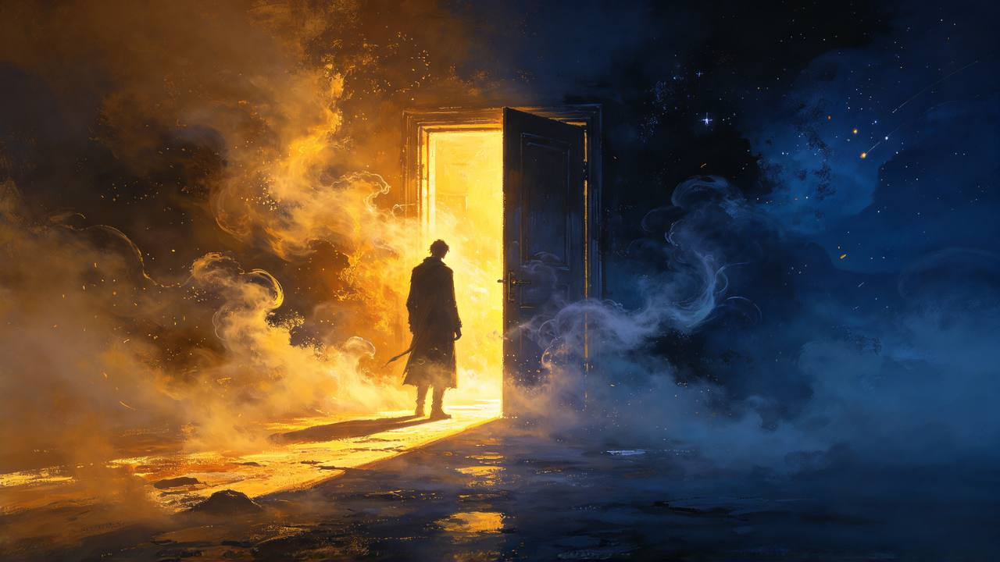
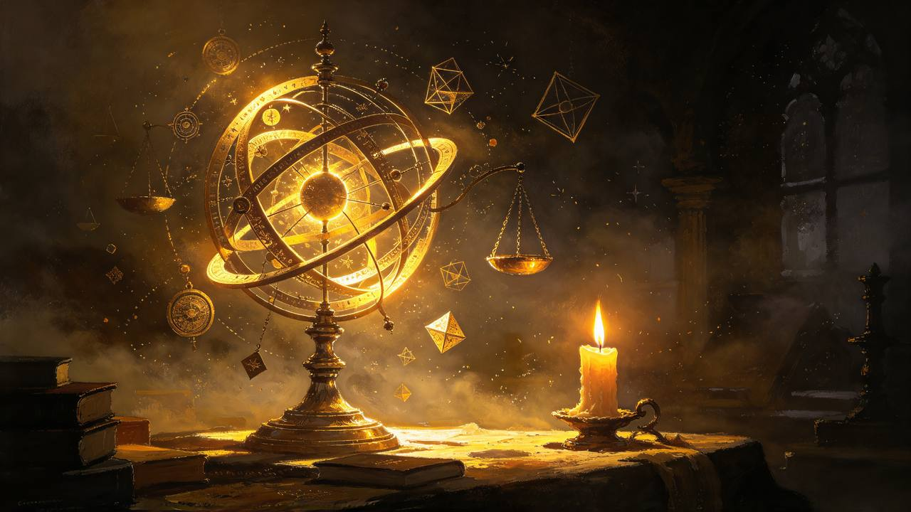
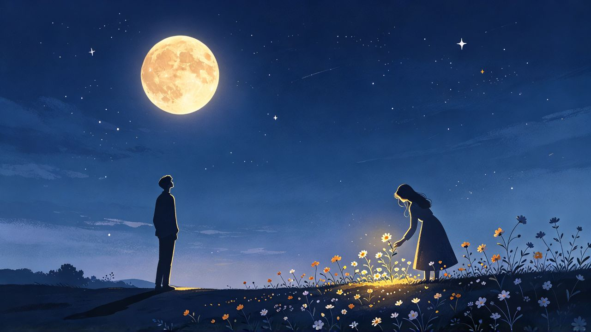
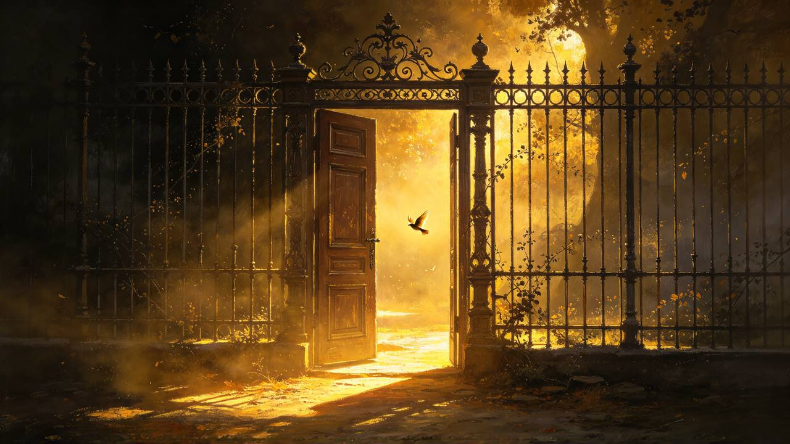
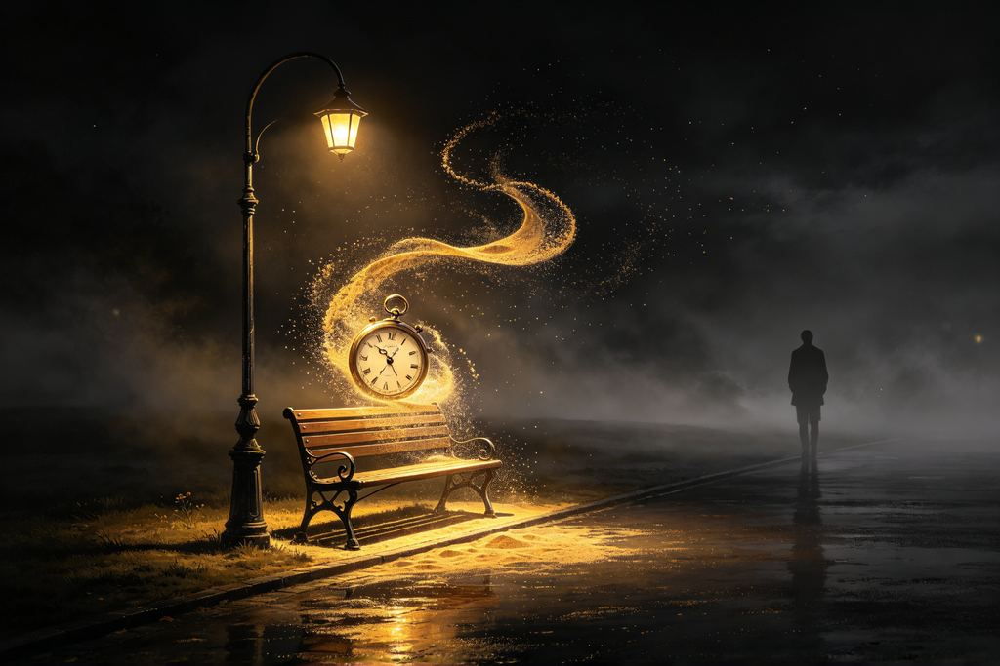
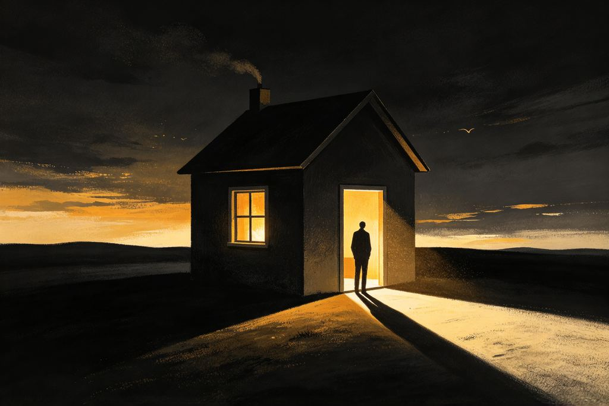
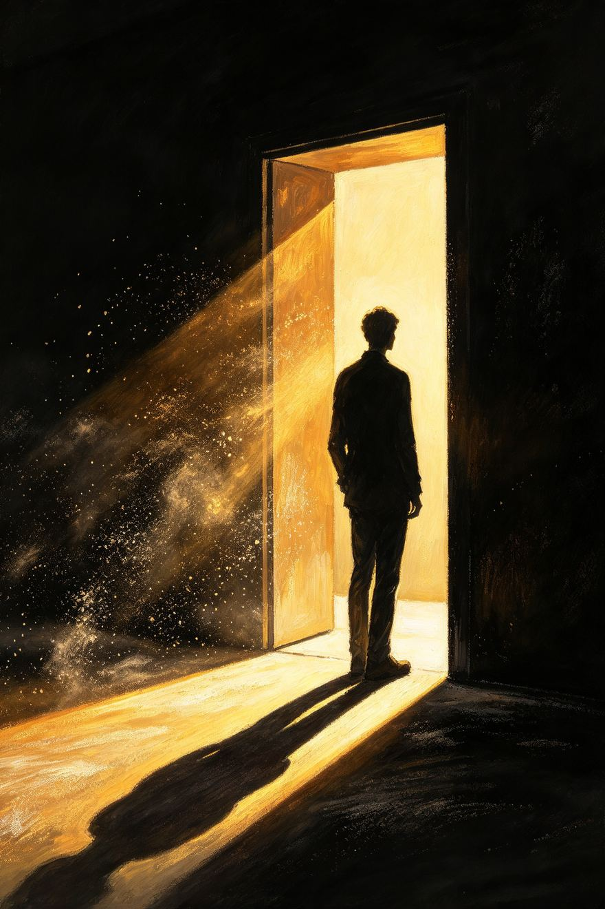

Ada banyak perkara dalam hidup yang dianggap berada di satu hujung.
Aku masih ingat bau kapur di dinding kelas itu. Serbuk putih yang melekat pada tapak tangan, dan apabila aku menggosoknya ke atas baju, kesannya tidak hilang begitu sahaja. Begitulah juga sebuah tuduhan. Ia tidak perlu benar untuk meninggalkan kesan. Ia hanya perlu diucapkan dengan cukup kuat, di hadapan orang yang cukup ramai, dan selepas itu segala-galanya berubah — bukan kerana fakta, tetapi kerana orang tidak lagi melihat kita dengan mata yang sama.
Betul atau salah. Ya atau tidak. Kiri atau kanan. Punya atau tidak punya. Dunia diajar untuk berhenti di dua pilihan itu, seolah-olah tiada yang lain wujud di antaranya.

Pada usia itu, aku belum tahu bahawa cahaya bukan sahaja menerangi. Ia juga mendedahkan. Dan apa yang didedahkan oleh cahaya tidak semestinya sesuatu yang boleh dibetulkan dengan penjelasan. Ada kalanya, orang lebih suka bayang-bayang yang mereka bentuk sendiri berbanding kebenaran yang menyusahkan mereka untuk mengubah pendapat.
Reputasi adalah bangunan yang dibina oleh orang lain, bukan oleh kita. Kita hanya menyediakan batu-batunya melalui tindakan, tetapi orang lain yang menentukan di mana batu itu diletakkan, sama ada menjadi dinding atau menjadi pintu. Dan apabila bangunan itu retak, kita tidak boleh membaikinya dengan berkata ia tidak retak. Kita hanya boleh menunggu, atau pergi, atau belajar hidup dengan retak itu sebagai sebahagian daripada seni bina diri.
Persepsi manusia bukan cermin. Ia adalah lukisan yang dibuat oleh pengalaman mereka sendiri, ketakutan mereka, kepentingan mereka. Apabila seseorang melihat kita, mereka tidak melihat kita. Mereka melihat versi kita yang paling selesa untuk mereka terima. Dan apabila versi itu tidak lagi selesa, mereka menukar lukisan itu tanpa meminta kebenaran kita.
Di antara tahu dan tidak tahu. Di antara pasti dan ragu. Di antara punya dan meminjam. Di antara sudah dan belum. Ruang inilah yang paling jarang dibincangkan, kerana ia tidak selesa. Ia tidak memberikan jawapan yang mudah. Ia memaksa kita berfikir, dan berfikir adalah perkara yang paling berat untuk dilakukan.
Aku tidak meminta pembaca percaya bahawa aku adalah mangsa. Aku meminta pembaca memahami satu perkara: di antara cahaya dan gelap, ada ruang yang lebih luas daripada kedua-duanya. Ruang itulah tempat aku hidup. Ruang di mana tuduhan belum tentu benar, pembelaan belum tentu jujur, dan kebenaran belum tentu memenangi apa-apa selain kesedaran bahawa ia benar.
Pada malam-malam selepas peristiwa itu, aku sering berbaring dan memikirkan sama ada aku akan menjadi orang yang berbeza jika tuduhan itu tidak berlaku. Mungkin. Tetapi kita tidak boleh memilih luka yang membentuk kita. Kita hanya boleh memilih apa yang kita lakukan dengan parut yang tertinggal.
Masih terngiang satu peristiwa di sekolah rendah. Seorang kawan dituduh mencuri wang kelas. Semua jari menuding ke arahnya. Seminggu kemudian, ketua kelas mengaku dialah yang mengambil. Tiada permintaan maaf. Tiada siapa membicarakannya lagi. Yang tinggal hanyalah satu kesedaran yang pahit: orang ramai tidak mencari yang benar. Mereka mencari cerita yang paling mudah untuk dipercayai, kemudian mempertahankannya seolah-olah ia satu-satunya kebenaran.
Pada suatu petang, beberapa tahun selepas peristiwa itu, aku bertemu semula dengan salah seorang guru yang terlibat. Kami berbual sebentar tentang cuaca, tentang harga barang, tentang perkara-perkara yang tidak penting. Dan apabila dia hendak pergi, dia berhenti sejenak dan berkata, 'Kita semua pernah membuat kesilapan.' Aku tidak menjawab. Aku hanya mengangguk. Kerana pada saat itu, aku faham: pengampunan bukan tentang berkata 'saya memaafkanmu'. Pengampunan adalah tentang tidak lagi membawa berat itu ke dalam bilik tidur kita setiap malam.
·
Di sebuah kampung, terdapat seorang lelaki yang sentiasa bercakap dengan tenang. Setiap kali ada majlis, suaranya yang perlahan itu memenuhi ruang. Wajahnya menenangkan. Orang ramai menumpukan perhatian, mempercayai setiap kata-katanya, seolah-olah ketenangan itu adalah bukti kejujuran.
Orang sering bertanya, mengapa kita tidak mendiamkan sahaja? Mengapa kita tidak berpindah sekolah, atau menukar nama, atau melupakan semuanya? Jawapannya mudah: kerana aku tidak bersalah. Dan orang yang tidak bersalah tidak sepatutnya berlari. Tetapi aku juga belajar: berdiri tegak tidak semestinya menang. Kadang-kadang ia hanya bermakna kita terkena lebih banyak batu. Dan kita mesti memilih: adakah kebenaran itu bernilai batu-batu itu?
Kemudian wang sumbangan tidak sampai kepada yang berhak. Tanda-tandanya sudah lama ada di depan mata — jumlah yang tidak sepadan, nama yang hilang dari senarai. Tetapi wajah tenang itu telah membuatkan semua orang tidak mahu mengesyaki apa-apa. Ketenangan telah menjadi tudung, dan tudung itu lebih tebal daripada sebarang pembohongan. Pada ketika itu, satu kebenaran terbit dengan sendirinya, tanpa perlu diucapkan dengan kuat.
Cahaya matahari pada waktu petang berbeza daripada cahaya matahari tengah hari. Ia lebih lembut, lebih panjang, lebih puitis. Begitu juga kebenaran yang kita bawa seiring usia. Pada waktu muda, kebenaran kita adalah terik — tajam, menyakitkan, tidak bertolak ansur. Seiring usia, ia menjadi lembut — bukan kerana ia kurang benar, tetapi kerana kita faham bahawa kebenaran perlu didengar, dan kebenaran yang terlalu terik membuatkan orang memalingkan muka.
Kita lebih mudah mempercayai wajah yang menenangkan daripada kebenaran yang mengganggu.
Hidup tidak pernah semudah itu. Dan orang yang jujur akan mengakui — kebanyakan masa, kita keliru. Sebab ia tidak mudah. Ia tidak hitam putih. Ia kelabu. Dan kebanyakan manusia tidak suka kelabu. Kelabu memaksa kita berfikir. Kelabu memaksa kita bertanggungjawab atas setiap keraguan. Kelabu tidak membenarkan kita lari.
Benci terhadap orang yang menuduh aku pernah tinggal dalam diri seperti tetamu yang tidak mahu pulang. Ia makan dari meja aku, tidur di katil aku, dan aku memberinya makan dengan memikirkan semula peristiwa itu setiap malam. Sehingga suatu hari aku sedar: orang yang menuduh aku sudah lama melupakan aku. Tetapi aku, dengan kebencian aku, masih memberinya kuasa untuk tinggal dalam kepala aku. Aku yang membenci, tetapi aku yang dipenjarakan.
Suatu anggapan pernah tersemat dalam dada: kalau segala-galanya disinari, nescaya kelihatan jelas. Anggapan itu, seperti banyak anggapan lain, tumbang apabila bertemu realiti.
·
Apabila sebuah kernel pertama kali dipasang oleh orang lain, nama penulisnya terpapar di skrin tetapan. Orang menulis di forum, "Kernel ini stabil, kerja yang kemas." Di dalam sorakan pujian itu, ia kelihatan profesional. Setiap baris kod seolah-olah lahir dari ketertiban.
Tetapi apa yang tersembunyi di sebaliknya? Malam-malam tanpa tidur. Kod yang dipinjam dari forum lain tanpa disebut. Ralat yang dipadam sebelum berkongsi. Komputer yang panas sehingga kipas kecil diletakkan di sebelahnya. Semua itu tidak kelihatan. Yang kelihatan hanyalah nama di skrin, berkilat di bawah cahaya pujian. Cahaya, pada akhirnya, bukanlah penyingkap. Ia adalah penyembunyi yang paling cerdik.
Cahaya tidak menjadikan segala-galanya suci. Ia hanya menjadikan sesetengah perkara lebih jelas, dan sesetengah yang lain lebih pandai bersembunyi.
Di situlah kehidupan sebenarnya berlangsung. Bukan di hujung yang terang atau yang gelap, tetapi di ruang antara keduanya — di mana cahaya tidak sampai sepenuhnya, dan gelap tidak menelan sepenuhnya. Di situlah manusia berjalan, tersandung, bangun, dan berjalan lagi.
Kadang-kadang aku berfikir, apakah yang akan terjadi jika aku tidak mempertahankan diri pada hari itu? Adakah hidup aku akan berbeza? Adakah aku akan menjadi orang yang lebih mudah berkompromi, lebih bersedia untuk membiarkan perkara berlalu? Aku tidak tahu. Tetapi aku tahu satu perkara: peristiwa itu mengajar aku bahawa berdiri untuk kebenaran ada harganya. Dan harga itu tidak selalu dibayar dalam bentuk yang kita jangka. Kadang-kadang ia dibayar dalam bentuk kepercayaan yang hilang — kepercayaan bahawa orang dewasa sentiasa betul, kepercayaan bahawa sistem itu adil, kepercayaan bahawa kebenaran akan menang. Dan apabila kepercayaan itu hilang, kita tidak pernah mendapatkannya kembali sepenuhnya. Kita hanya belajar hidup tanpa ia.
Kita tidak hidup di hujung. Kita hidup di antara.
Catatan ini tentang ruang itu. Tentang segala yang wujud di antara jawapan dan persoalan. Tentang apa yang dipelajari, dan apa yang masih belum difahami. Tentang cahaya yang dipasang oleh orang lain, dan gelap yang kita pilih untuk masuk, untuk mencari kebenaran yang tidak mahu dilihat.
·
Perjalanan ini bukanlah sebuah hujah. Ia tidak bertujuan memenangkan mana-mana pihak. Ia hanyalah catatan seorang yang telah cukup lama hidup di antara, untuk melihat corak yang berulang.
Aku sering berfikir tentang cahaya. Kita selalu menganggap cahaya adalah baik, gelap adalah jahat. Tetapi cahaya juga boleh menyakiti — ia boleh membutakan, mendedahkan perkara yang sepatutnya tersembunyi, digunakan untuk menyiasat dan memalukan. Gelap boleh menjadi perlindungan: tempat untuk bersembunyi, menyembuhkan, mencari diri. Jadi siapakah yang menentukan bahawa cahaya adalah baik? Orang yang mempunyai lampu. Dan orang yang berada dalam gelap mungkin mempunyai pandangan yang berbeza.
Maka biarlah catatan ini bermula. Bukan dengan jawapan. Tetapi dengan soalan. Bukan dengan keyakinan. Tetapi dengan keraguan yang jujur. Kerana di situlah, di antara keduanya, kehidupan sebenar dapat ditemui. Dan mereka yang takut dengan keraguan, tidak akan pernah sampai ke sana.
Kita sering memilih satu hujung dan mempertahankannya seolah-olah ia satu-satunya kebenaran. Namun hidup tidak berhenti di hujung — ia bergerak di ruang antara.
Di situlah aku belajar berdiri: tidak sepenuhnya dalam cahaya, tidak sepenuhnya dalam gelap. Hanya dengan berdiri di antara keduanya, aku boleh melihat kedua-duanya.
Kebenaran tidak selalu berada di satu hujung. Kadang-kala, ia hidup di ruang antara.
AKAL — DI ANTARA TAHU DAN TIDAK TAHU
Pada mulanya, ilmu dianggap sebagai pengumpulan jawapan. Semakin banyak jawapan, semakin pandai seseorang. Itulah ukuran yang diajarkan di sekolah: hafal, jawab, dapat markah. Tiada ruang untuk soalan. Tiada ruang untuk ragu.
Forum adalah sebuah bandar. Ada lorong-lorong gelap, ada dataran terbuka, ada penjual ubat, ada guru, ada penipu, dan ada orang yang hanya mahu pulang ke rumah tetapi tersesat. Di bandar itu, reputasi adalah mata wang. Dan seperti semua mata wang, nilainya boleh jatuh dalam sehari apabila orang ramai panik.
Tetapi anggapan itu tumbang. Setiap jawapan yang ditemui melahirkan tiga persoalan baharu. Dan setiap persoalan itu membawa ke tempat yang lebih dalam, lebih gelap, lebih sukar untuk dinamakan. Semakin banyak tahu, semakin banyak yang tidak diketahui. Itulah ironi ilmu — ia tidak mengisi kekosongan. Ia mendedahkan betapa besar kekosongan itu.

Aku belajar debug bukan dari buku. Aku belajar dari ketakutan — ketakutan bahawa telefon orang lain akan rosak kerana apa yang aku tulis. Setiap baris kod yang aku tulis pada waktu malam diikuti dengan soalan: adakah ini akan menyebabkan seseorang kehilangan data mereka? Adakah ini akan membuat mereka marah? Adakah aku akan dipanggil penipu esok pagi?
Akal bukan lampu yang menerangi seluruh bilik. Akal ialah obor yang menerangi langkah seterusnya. Selebihnya, gelap. Dan gelap itu bukan masalah. Gelap itu ruang untuk terus mencari.
Bootloop adalah metafora yang sempurna untuk kehidupan. Telefon yang tidak boleh masuk ke sistem, yang hanya berputar pada logo yang sama, berulang kali, tanpa jalan keluar. Kita semua ada bootloop kita sendiri — pemikiran yang berputar pada kesilapan yang sama, hubungan yang berulang pada pola yang sama, kebencian yang tidak pernah tamat kerana kita tidak tahu butang untuk masuk ke mod pemulihan.
Terdapat mereka yang takut dengan apa yang tidak diketahui. Mereka berpura-pura tahu. Mereka mengisi ruang kosong dengan pendapat yang keras, seolah-olah kekerasan suara boleh menggantikan kekurangan pengetahuan.
Perbezaan antara bukti dan dakwaan adalah perbezaan antara pintu dan dinding. Bukti membuka. Dakwaan menutup. Tetapi di forum, orang sering menganggap dinding yang dicat seperti pintu. Mereka menolaknya dengan keras, dan apabila ia tidak terbuka, mereka menyalahkan orang yang berada di sebaliknya.
Lebih baik mengaku. Lebih baik berkata, tidak tahu. Dan dalam ketidaktahuan itu, terdapat ruang untuk belajar — ruang yang tidak wujud dalam diri mereka yang yakin sepenuhnya. Kerana mereka yang yakin sepenuhnya, telah berhenti belajar.
Moderator bukan hakim. Mereka adalah orang yang diberi penyapu untuk membersihkan bandar, tetapi tidak diberi kuasa untuk menentukan siapa yang bersalah. Dan apabila penyapu digunakan ke atas orang yang tidak bersalah, atau tidak digunakan ke atas orang yang bersalah, bandar itu menjadi tempat yang aneh — di mana keadilan bukan tentang benar atau salah, tetapi tentang siapa yang mempunyai penyapu.
·
Dunia forum Android memasuki kehidupan pada usia sekitar sembilan belas tahun. Pada mulanya, hanya membaca. Orang berdebat tentang kod, tentang prestasi, tentang mana yang lebih baik. Kata-kata terbang di skrin, setiap satu disertai keyakinan yang berbeza-beza.
Aku pernah mempertahankan sesuatu yang aku tahu benar, dan aku tahu harganya. Harga itu bukan sekadar masa atau tenaga. Harga itu adalah kepercayaan bahawa kebenaran akan menang. Apabila kita mempertahankan kebenaran dan kalah, kita tidak kehilangan hujah. Kita kehilangan sebahagian daripada kepercayaan bahawa dunia ini adil. Dan sebahagian itu tidak pernah kembali sepenuhnya.
Satu pola mula kelihatan. Bukan orang yang paling betul yang menang perdebatan. Tetapi orang yang menulis paling cepat, paling yakin, dan paling mudah difahami. Orang ramai malas membaca penjelasan yang panjang. Mereka menerima yang ringkas, walaupun ia salah. Kemudian mereka menulis semula di tempat lain, seolah-olah ia pengetahuan sendiri.
Tetapi aku juga belajar: kehilangan hujah tidak bermakna kita salah. Ia hanya bermakna orang ramai belum bersedia untuk mendengar. Dan kadang-kadang, tidak bersedia mendengar adalah bentuk perlindungan mereka sendiri. Kita tidak boleh memaksa orang melihat cahaya jika mata mereka masih terbiasa dengan gelap.
Reputasi pembangun adalah kontrak tidak bertulis. Kita berjanji untuk tidak mencederakan data orang lain, dan mereka berjanji untuk mempercayai kita. Apabila kontrak itu pecah — sama ada kerana kesilapan atau kerana fitnah — ia tidak boleh dipulihkan dengan permintaan maaf. Ia hanya boleh dibina semula, batu demi batu, dalam senyap, tanpa penonton.
Suatu ketika, terdapat satu bug yang membuatkan banyak telefon bootloop. Dua orang memberi penjelasan. Yang pertama ringkas: ia kerana aplikasi pihak ketiga. Yang kedua panjang dan rumit: ia kerana masalah pada kernel. Orang ramai memilih yang pertama. Mereka membuang aplikasi. Telefon masih rosak. Tetapi mereka tetap yakin, kerana penjelasan itu mudah. Pada ketika itu, jelaslah apa yang sebenarnya menewaskan kebenaran.
Debugging adalah seni mendengar. Kita mendengar apa yang komputer katakan, bukan apa yang kita fikir ia sepatutnya katakan. Dan dalam hidup, kita sering menjadi pengaturcara yang buruk — kita tidak mendengar apa yang orang lain katakan, kita hanya mendengar apa yang kita fikir mereka sepatutnya katakan. Dan apabila sistem rosak, kita menyalahkan sistem, bukan kod kita sendiri.
·
Orang yang pertama menulis tentang bug itu mempunyai ribuan pengikut. Dia tidak mengubah apa yang berlaku. Tetapi dia mengubah apa yang orang percaya telah berlaku. Selebihnya hanya mengulang apa yang mereka baca, tanpa pernah menyemak. Setiap ulangan menambah keyakinan. Setiap ulangan menjauhkan kebenaran. Maka tibalah satu kesimpulan yang tidak boleh dielakkan.
Orang yang menguasai cerita tentang sesuatu peristiwa mungkin tidak mampu mengubah apa yang berlaku, tetapi dia mampu mempengaruhi apa yang dipercayai tentangnya.
Pada masa itu, semua orang dalam satu kumpulan menggunakan ROM yang sama. Nama pembangunnya terkenal. Setiap kali ada masalah, jawapannya sama: "Ini bukan salah ROM. Ini salah telefon kamu." Tiada siapa berani mencabar. Kerana mencabar bermakna bersendirian, dan bersendirian adalah perkara yang paling ditakuti dalam kumpulan.
ROM alternatif yang kurang terkenal diuji selama seminggu. Ia lebih stabil. Bateri lebih tahan. Tetapi apabila keputusan itu dikongsi, ketawaan memenuhi ruang. "Cuba yang betul punya," tulis seorang. Komen itu disukai oleh ramai. Semua orang melihat dari arah yang sama, dan mereka menyangka itulah kebenaran. Sedangkan mereka hanya berkongsi satu kebutaan yang sama.
Moderator yang baik tahu bahawa mereka bukan Tuhan. Mereka tahu bahawa keputusan mereka boleh salah, dan mereka bersedia untuk mendengar. Moderator yang buruk merasakan kuasa mereka adalah kebenaran mutlak. Dan di internet, kita semua telah melihat kedua-dua jenis. Dan kita semua, pada satu ketika, mungkin menjadi salah satu daripadanya — jika kita diberi penyapu itu.
·
Terdapat malam-malam yang dihabiskan untuk debug kernel sehingga tiga pagi. Telefon bootloop berkali-kali. Di-flash semula. Dicuba lagi. Kemudian rosak lagi. Komputer di sebelah panas sehingga kipas kecil diletakkan di situ, berdengun dalam bilik yang sunyi. Skrin gelap memantulkan wajah yang penat. Dan di sebalik penat itu, satu beban yang tidak disebut: satu baris kod yang salah, dan telefon orang lain — orang yang tidak dikenali, yang mempercayai nama di skrin — mungkin tidak akan hidup semula. Debugging bukan sahaja mencari ralat. Ia adalah menanggung berat bahawa apa yang kau tulis boleh mencederakan orang yang tidak pernah kau temui.
Seorang pembangun yang baik ditinggalkan oleh komuniti kerana satu kesilapan. Aku melihatnya berlaku. Bukan kerana kesilapan itu tidak boleh dimaafkan. Tetapi kerana di internet, ruang untuk pengampunan adalah sempit. Internet mempunyai ingatan yang panjang dan hati yang pendek. Dan apabila kita jatuh di hadapan ribuan orang, ribuan orang itu akan mengingati kejatuhan kita, bukan kebangkitan kita.
Pada satu ketika, semuanya berhenti. Jari terangkat dari papan kekunci. Mata memandang skrin yang gelap. Dan pada ketika itu, satu batas terlihat jelas: akal boleh membaca kod. Tetapi akal tidak boleh menjelaskan kenapa seseorang sanggup tidak tidur untuk sebuah telefon. Di situlah batas akal bermula. Apabila ia boleh menjawab bagaimana, tetapi tidak boleh menjawab mengapa. Dan soalan mengapa, adalah soalan yang tidak boleh dijawab oleh mana-mana kod.
Segala-galanya dipelajari sendiri. Google. YouTube. Forum. Cuba. Rosak. Cuba lagi. Tiada guru. Tiada sijil. Hanya kegagalan yang berulang, dan keengganan untuk berhenti.
Dalam proses itu, satu perkara tercatat dalam hati: ilmu bukan tentang sampai ke destinasi. Ilmu adalah tentang bersedia untuk tersesat, kemudian mencari jalan semula. Dan mereka yang takut tersesat, tidak akan pernah sampai ke mana-mana. Mereka akan kekal di tempat yang sama, selamanya yakin, selamanya tidak tahu.
Dunia pembangunan Android mengajar aku satu perkara tentang manusia: apabila telefon rosak, orang mahu seseorang untuk disalahkan. Mereka tidak mahu mendengar tentang konflik perkakasan, tentang ketidakserasian pemacu, tentang variasi pengeluar. Mereka mahu nama. Dan nama yang paling mudah didapati adalah nama orang yang cuba membantu.
·
Seorang moderator forum memegang kuasa. Suatu ketika, dia tersalah faham tentang satu perkara. Seorang pengguna disekat akaunnya kerana tuduhan yang tidak betul. Bukti dikemukakan. Tetapi keputusan tetap dipegang. "Saya tetap dengan keputusan saya," tulisnya. Dan dengan itu, satu pembohongan menjadi kebenaran rasmi.
Pembohongan itu tidak perlu meyakinkan semua orang. Cukuplah dia, yang berkuasa, terus mempercayainya. Selebihnya, pengguna lain hanya melihat keputusan itu dan mengangguk. Kerana mengangguk lebih mudah daripada mencabar. Dan mencabar seseorang yang berkuasa, selalunya berakhir dengan penyekatan. Maka satu kebenaran pahit terpaksa diterima.
Dunia forum mengajar aku tentang ingatan kolektif. Di internet, tiada lupaan. Setiap perkataan yang kita tulis kekal, diarkibkan, disalin, disimpan. Dan apabila kita melakukan kesilapan, kesilapan itu boleh diambil keluar konteks bertahun-tahun kemudian, untuk membuktikan sesuatu tentang kita. Itulah harga hidup di awan digital.
Pembohongan paling berguna tidak semestinya meyakinkan semua orang. Cukuplah ia membuat orang yang berkuasa terus mempercayainya.
Pengguna itu tidak pernah kembali. Namanya masih tercatat dalam senarai yang disekat. Dia tidak melakukan apa-apa salah. Cuma dia berada di pihak yang salah, pada masa yang salah, di hadapan orang yang tidak mahu mendengar. Dan itulah harga kebenaran — selalunya dibayar oleh orang yang tidak bersalah.
·
Seorang pembangun terkenal membuat kesilapan dalam kod. Kesilapan itu menyebabkan banyak telefon rosak. Tetapi kerana namanya besar, orang mempertahankannya. "Ini bukan kesilapan dev. Ini pengguna yang tidak ikut arahan." Kod itu jelas di depan mata. Tetapi nama itu lebih berat daripada bukti.
Reputasi menjadi bayang yang dibentuk oleh pandangan orang lain. Dan manusia sanggup mengorbankan dirinya sendiri — maruah, kebenaran, logik — demi memastikan bayangan itu kekal utuh. Kerana apabila bayangan itu jatuh, mereka takut diri mereka sendiri turut jatuh bersamanya. Maka mereka mempertahankan nama itu, seolah-olah mempertahankan nyawa sendiri.
Dunia digital mengajar aku tentang identiti. Di internet, kita boleh menjadi sesiapa sahaja. Kita boleh mencipta nama, mencipta personaliti, mencipta reputasi. Tetapi lambat laun, identiti sebenar kita akan muncul. Kerana kita tidak boleh bersembunyi selama-lamanya di sebalik nama samaran. Terdapat detik-detik apabila kita terlepas, apabila kita menulis sesuatu yang terlalu peribadi, apabila kita bertindak balas dengan cara yang terlalu sebenar. Dan pada detik itu, orang melihat kita. Dan itulah saat yang menentukan: sama ada mereka menerima kita yang sebenar, atau mereka meninggalkan kita yang palsu.
Reputasi ialah bayangan yang dibentuk oleh pandangan orang lain; manusia sanggup mengorbankan dirinya sendiri demi memastikan bayangan itu kekal utuh.
Bug yang sama, apabila dilaporkan oleh orang baru, dipanggil kesilapan pengguna. Apabila dilaporkan oleh dev senior, dipanggil isu yang diketahui dan akan diperbaiki. Fakta tidak berubah. Tetapi maknanya berubah, bergantung kepada siapa yang berhak menjelaskan. Dan hak untuk menjelaskan, selalunya dimiliki oleh mereka yang mempunyai nama, bukan oleh mereka yang mempunyai kebenaran.
·
Diam adalah pilihan yang selamat. Reputasi terpelihara. Tiada siapa marah. Tetapi punca sebenar bug itu diketahui. Orang yang disalahkan tidak bersalah. Dan kesunyian pada waktu malam menjadi lebih berat daripada sebarang kemarahan.
Pada satu malam, penjelasan panjang ditulis. Bukti dilampirkan. Jari teragak-agak di atas butang hantar. Ia akan membuatkan beberapa orang tidak sukakan. Tetapi butang itu ditekan juga. Keesokan harinya, ada yang berterima kasih. Ada yang memarahi. Tetapi yang penting, kebenaran akhirnya terbit — bukan kerana ia kuat, tetapi kerana seseorang berani tidak mendapat keuntungan daripadanya.
Kadangkala, kebenaran tidak memerlukan musuh untuk dikalahkan. Ia hanya memerlukan seseorang yang mempunyai keberanian untuk tidak mendapat keuntungan daripadanya.
Dan dalam semua pemerhatian tentang forum dan orang lain, satu soalan tetap tertinggal untuk diri sendiri: adakah aku pernah berdiam ketika aku harus bersuara? Jawapannya, jika jujur, adalah ya. Bukan kerana tidak tahu. Tetapi kerana tahu harga untuk bersuara — nama tercemar, reputasi diragui, diketepikan. Dan dalam diam itu, aku menjadi sebahagian daripada sistem yang aku kritikan. Inilah batas akal yang paling menyakitkan: akal boleh melihat kebenaran, tetapi akal tidak semestinya memberi keberanian untuk menyebutnya. Dan kebenaran yang tidak disebut, walaupun diketahui, adalah sama dengan pembohongan yang disetujui. Perbezaannya hanya terletak pada apa yang kita katakan kepada diri sendiri untuk tidur dengan lena. Ingatan tentang saat-saat diam itu masih kembali, pada malam-malam tertentu. Ia tidak meninggalkan kesan pada orang lain. Ia hanya meninggalkan kesan pada aku.
Di forum yang sama, orang berlumba-lumba mendapatkan jumlah terima kasih dan jawatan. Jawapan panjang ditulis agar kelihatan pandai, bukan kerana ia betul. Profil dikemas dengan gelaran. Yang penting bukan membantu. Yang penting kelihatan membantu. Dan apabila penampilan menjadi ukuran, perlumbaan berubah arah — orang tidak lagi berlumba untuk menjadi. Mereka berlumba untuk kelihatan.
·
Forum itu masih dibuka kadang-kadang. Perdebatan yang sama masih berlaku. Nama yang berbeza. Wajah yang berbeza. Tetapi polanya sama. Orang masih memilih cerita yang mudah, bukan kebenaran yang susah. Orang masih mempertahankan nama, bukan fakta. Orang masih berlumba untuk kelihatan, bukan untuk menjadi.
Tiada kemarahan lagi. Hanya satu kesedaran yang tenang: itulah manusia. Termasuk mereka yang menulis catatan ini. Kita semua lebih suka yang senang. Yang membezakan kita hanyalah, seberapa kerap kita sanggup memilih yang susah. Dan memilih yang susah, adalah satu-satunya cara untuk keluar dari kebutaan bersama.
Akal ada batasnya. Dan mengakui batas itu — itulah awal kebijaksanaan yang sebenar. Bukan mengetahui banyak perkara. Tetapi mengetahui apa yang tidak diketahui, dan berani hidup dengan ketidaktahuan itu, tanpa mengisi ruang kosong dengan pembohongan yang selesa. Itulah permulaan. Dan permulaan, sudah cukup. Dan di situlah akal berhenti. Di situlah persoalan iman bermula.
Akal mengajar aku untuk bertanya, tetapi ia juga mengajar aku untuk tahu bila berhenti. Tidak semua soalan perlu jawapan — ada yang hanya perlu kita bawa hidup-hidup.
Yang tahu dan yang tidak tahu bukan dua negara yang berperang. Mereka adalah dua kaki yang sama-sama menopang kita ketika berjalan.
Orang bijak bukanlah yang tahu segala-galanya, tetapi yang tahu batas pengetahuannya.
IMAN — DI ANTARA PASTI DAN RAGU
Ada yang berbicara tentang iman seolah-olah ia adalah tembok. Kokoh. Tanpa retak. Tanpa ruang untuk soalan. Setiap keraguan dianggap kelemahan. Setiap soalan dianggap penghinaan. Dan mereka yang paling lantang, selalunya yang paling takut dengan soalan mereka sendiri.
PLKN adalah sebuah dunia kecil. Di dalam kem itu, semua orang dari pelbagai latar belakang dipaksa hidup bersama, makan bersama, berbaris bersama. Dan dalam kedekatan yang dipaksa itu, aku melihat sesuatu: kepercayaan yang paling kuat selalunya dimiliki oleh orang yang paling takut untuk mempersoalkannya.
Tetapi iman bukan tembok. Iman lebih seperti jalan. Ada hari langkah diambil dengan yakin. Ada hari terhenti. Ada hari berpatah balik, kemudian mula berjalan semula. Dan jalan itu tidak pernah lurus. Ia berliku. Ia menanjak. Ia kadang-kadang hilang di tengah lalang.
Aku bukan seorang yang tidak percaya. Aku adalah seorang yang terlalu banyak bertanya. Dan aku belajar bahawa bertanya bukanlah tanda iman yang lemah. Ia adalah tanda iman yang hidup. Iman yang tidak pernah dipersoalkan adalah seperti otot yang tidak pernah digunakan — ia kelihatan kuat, tetapi apabila diperlukan, ia tidak mampu menanggung apa-apa berat.
Ragu bukan tanda iman lemah. Ragu adalah tanda kita masih berfikir. Masih mencari. Masih hidup. Orang yang tidak pernah ragu, sama ada dia tidak pernah berfikir, atau dia tidak pernah cukup peduli. Dan kedua-duanya, bukanlah tanda iman yang kuat. Ia hanyalah tanda kemalasan berfikir.
Dilema moral di kem itu bukan tentang memilih antara baik dan jahat. Ia adalah tentang memilih antara dua kebaikan yang bertentangan. Antara kesetiaan kepada kawan dan kejujuran kepada peraturan. Antara berdiam diri dan berbicara. Antara menyelamatkan diri dan menyelamatkan orang lain. Dan dalam pilihan itu, aku belajar bahawa moral bukan formula. Ia adalah beban yang kita pikul selepas kita memilih.
Iman bukan ketiadaan ragu. Iman adalah memilih untuk terus berjalan, walaupun ragu masih ada di sisi.
Orang yang yakin sepenuhnya — dan tidak mahu mendengar — selalunya orang yang paling berbahaya. Bukan kerana mereka jahat, tetapi kerana mereka tidak dapat membayangkan bahawa mereka mungkin salah. Dan apabila seseorang tidak dapat membayangkan kesilapan sendiri, mereka boleh melakukan apa sahaja dengan hati yang bersih — termasuk mencederakan orang lain atas nama apa yang mereka anggap benar.
Dalam perjalanan itu, banyak manusia diperhatikan. Termasuk diri sendiri. Dan ujian yang paling berat bukanlah tentang apa yang dipercayai. Tetapi tentang apa yang dilakukan apabila kepercayaan itu merugikan. Kerana iman yang hanya wujud ketika menguntungkan, bukanlah iman. Ia hanyalah transaksi.
Keraguan yang jujur adalah lebih mulia daripada keyakinan yang buta. Tetapi keraguan juga meletihkan. Ia membuatkan kita sentiasa menimbang, sentiasa mengukur, sentiasa takut untuk melangkah kerana kita tidak pasti. Dan ada kalanya, aku merindui kesederhanaan orang yang yakin — walaupun aku tahu kesederhanaan itu adalah ilusi.
·
Di kem PLKN, tiga bulan dihabiskan bersama orang yang berbeza-beza. Ada yang pendiam. Ada yang bising. Ada yang sentiasa menolong. Dan ada yang menolong hanya apabila ada mata yang melihat.
Prinsip adalah mudah apabila ia tidak diuji. Apabila ia hanya tertulis di kertas atau diucapkan di khalayak ramai, ia kelihatan kuat. Tetapi apabila kita diminta untuk membayar harga untuk prinsip itu — apabila ia menjejaskan makanan di meja kita, atau hubungan kita, atau reputasi kita — barulah kita tahu sama ada prinsip itu milik kita, atau kita hanya meminjamnya daripada orang lain. Dan aku tertanya-tanya, adakah prinsip aku sendiri pernah diuji dengan cukup kuat? Atau adakah aku hanya bernasib baik kerana tidak pernah diminta membayar harga yang terlalu tinggi?
Seorang kawan sentiasa berkongsi bekalan. Membantu kerja kumpulan. Bangun awal mengemas khemah. Semua orang menyukainya. Tetapi apabila tiada siapa melihat, dia berubah — malas, suka mengarah, kadang-kadang mengambil bekalan orang lain tanpa bertanya. Kebaikannya belum pernah diuji, kerana ia hanya wujud ketika menguntungkannya. Dan kebaikan yang tidak pernah diuji, tidak boleh dipanggil kebaikan. Ia hanyalah persembahan.
Ketidakkonsistenan orang lain pernah aku kritik dengan keras. Kemudian aku mendapati diri aku tidak konsisten dalam perkara yang sama. Dan pada saat itu, aku faham: kritikan terhadap manusia sentiasa perlu diarahkan terlebih dahulu ke cermin. Kerana apa yang kita benci pada orang lain selalunya adalah apa yang kita takut untuk lihat pada diri sendiri.
Kebaikan yang hanya bertahan ketika menguntungkan pemiliknya belum pernah benar-benar diuji.
Tiada pembongkaran dibuat. Hanya pemerhatian yang senyap. Dan satu pelajaran tercatat: jangan terlalu cepat memuji seseorang yang kebaikannya hanya wujud di hadapan orang. Kebaikan yang sebenar wujud apabila tiada siapa melihat. Dan itulah kebaikan yang paling jarang ditemui — kerana ia tidak mencari pujian. Ia hanya wujud, kerana ia mesti wujud.
Kepercayaan bukan jawapan. Ia adalah hubungan. Dan seperti semua hubungan, ia mempunyai hari-hari di mana kita tidak merasakannya, hari-hari di mana kita mempersoalkannya, dan hari-hari di mana kita kembali bukan kerana kita yakin, tetapi kerana kita tidak tahu ke mana lagi harus pergi.
·
Ada seorang lagi. Dia berkorban banyak untuk kawanannya — membelanjakan wang, menghabiskan masa, menanggung kerja orang lain. Semua orang memanggilnya pemurah. Namanya disebut-sebut sebagai contoh.
Di kem PLKN — selepas tiga bulan hidup bersama dalam kedekatan yang dipaksa, makan bersama, berbaris bersama — aku melihat seorang kawan menangis pada waktu malam. Aku hanya memerhati. Aku tidak mendekati. Dia tidak memberitahu sesiapa. Dia hanya berbaring di atas katilnya, dan air matanya membasahi bantal. Pada keesokan harinya, dia ketawa seperti biasa. Aku kemudiannya tahu — dia rindu keluarga, ingin pulang. Pada usia 18 tahun, di kem selama tiga bulan, perasaan itu sering berlaku, tetapi jarang diakui. Dan aku faham: setiap orang membawa sesuatu yang tidak mereka tunjukkan. Dan agama atau kepercayaan apa pun yang mereka anut, ia tidak menghalang air mata. Ia hanya memberi mereka kata-kata untuk menerangkan air mata itu.
Beberapa bulan selepas PLKN, apabila dia memerlukan sesuatu, setiap seorang dihubungi. Setiap pengorbanan itu diingati satu persatu. "Aku pernah tolong kau masa itu," katanya. "Sekarang giliran kau." Dan apabila tidak dipenuhi, dia tersinggung. Dia mengingati setiap sen, setiap jam, setiap titik peluh. Apabila tiba masanya, ia dituntut dengan faedah. Dengan marah. Dengan perasaan bahawa dunia berhutang padanya. Maka jelaslah apa yang sebenarnya wujud di sebalik pengorbanan itu.
Prinsip yang diuji di kem adalah kecil tetapi nyata. Sama ada untuk melaporkan kawan yang mencuri rokok, atau untuk berdiam diri. Sama ada untuk mengaku bahawa kita salah, atau untuk membiarkan orang lain menanggung kesilapan kita. Dalam perkara-perkara kecil itulah watak dibina — bukan dalam khutbah Jumaat atau ceramah motivasi, tetapi dalam pilihan sunyi yang tiada siapa lihat.
Tidak semua pengorbanan lahir daripada kasih sayang. Ada yang merupakan pelaburan yang belum tiba masa untuk dituntut.
Kasih sayang tidak ditolak. Tetapi satu kehati-hatian tumbuh: ada yang memberi kerana hati. Ada yang memberi kerana buku kira-kira. Bezanya hanya kelihatan apabila mereka memerlukan sesuatu. Dan pada ketika itulah, wajah sebenar muncul. Wajah yang selama ini disembunyikan di balik topeng kemurahan hati.
·
Janji pernah dipecahkan. Kami berjanji akan mengerjakan sesuatu bersama. Pada hari terakhir, kehadiran tidak terwujud. Ada alasan — penat, ada kerja lain. Dan diri sendiri dimaafkan dengan mudah. Niat baik. Keadaan tidak mengizinkan. Hati tidak berdosa.
Aku pernah meragui segala-galanya. Dan dalam keraguan itu, aku tidak menemui kepastian. Aku menemui sesuatu yang lebih berharga: aku menemui bahawa aku boleh hidup tanpa kepastian. Bahawa aku boleh bangun pada waktu pagi, membuat kopi, menulis, bercakap dengan orang, tanpa perlu tahu dengan pasti apa maksud semua ini. Dan kebebasan itu lebih indah daripada apa-apa jawapan yang pernah aku temui.
Beberapa bulan kemudian, kawan yang sama memecahkan janji. Kemarahan membara. Kekecewaan mendalam. Dia dinilai berdasarkan kekecewaan yang diterima. Niatnya tidak diambil kira. Keadaannya tidak dipertimbangkan. Yang penting, akibatnya dirasai. Dan itu sudah cukup untuk menghukum. Dua ukuran. Satu untuk diri sendiri, berdasarkan niat. Satu untuk orang lain, berdasarkan akibat. Dan ia bukanlah keanehan seorang. Ia adalah kebiasaan manusia.
Manusia sering mengukur moraliti tindakannya berdasarkan niat sendiri, tetapi moraliti tindakan orang lain berdasarkan akibat yang diterimanya.
Pada satu ketika, seseorang disalahkan atas kesilapan yang dilakukan oleh orang lain. Berdiam diri adalah pilihan yang selamat — kelihatan betul, tidak ada masalah. Tetapi pengakuan dibuat. Kesilapan diakui. Ada perbezaan antara melakukan perkara yang benar, dengan melakukan perkara yang membuat orang lain menganggap kita benar. Dan yang pertama, selalunya menyakitkan. Tetapi yang pertama, itulah yang membuatkan kita boleh tidur dengan lena pada waktu malam.
Kita sering mengkritik orang lain kerana kelemahan yang kita sendiri miliki. Ahli psikologi memanggilnya unjuran. Aku memanggilnya kejujuran yang tidak sedar. Apabila kita menuding jari kepada orang lain, kita sebenarnya menuding kepada bahagian diri kita yang kita tidak mahu lihat. Dan jika kita berani untuk melihat ke dalam, kita akan mendapati bahawa apa yang kita benci pada mereka adalah apa yang kita takutkan pada diri kita sendiri.
·
Pada satu malam di sejadah, satu masalah besar baru sahaja dihadapi. Kata-kata doa tidak keluar. Hanya duduk. Diam. Air mata tidak jatuh. Hanya ada keheningan yang berat.
Kepercayaan yang tidak boleh dipersoalkan bukanlah kepercayaan. Ia adalah penjara. Dan orang yang berada dalam penjara itu selalunya tidak tahu mereka dipenjarakan. Mereka berfikir dinding itu adalah perlindungan. Sehingga suatu hari, seseorang bertanya soalan yang mudah, dan dinding itu retak — dan mereka melihat, untuk pertama kalinya, bahawa ada dunia di luar.
Kemudian tangan diangkat, tanpa sebarang kata. Dan pada malam itu, satu perasaan hadir: doa yang tanpa kata-kata itu, mungkin yang paling jujur. Kerana ia tidak meminta apa-apa. Ia hanya hadir. Dan kehadiran, kadang-kadang, adalah doa yang paling tulen. Doa yang meminta, selalunya didorong oleh keinginan. Doa yang hanya hadir, didorong oleh keperluan untuk dekat. Dan itu, adalah perbezaan yang besar.
Di kem, aku melihat orang berdoa dengan penuh khusyuk, kemudian bergosip tentang kawan mereka selepas itu. Aku melihat orang berkhutbah tentang kejujuran, kemudian berbohong tentang perkara kecil. Dan aku belajar: kepercayaan bukan tentang apa yang kita ucapkan. Ia tentang apa yang kita lakukan apabila tiada siapa yang melihat. Dan ujian sebenar kepercayaan bukan di tempat ibadat. Ia di dapur, di bilik tidur, di tempat di mana kita bersendirian dengan pilihan kita.
Pada malam itu juga, satu soalan menggantung di hati: jika benar-benar percaya, mengapa masih takut? Mengapa masih mengira untung rugi? Jawapannya tidak datang. Tetapi duduk diteruskan. Kadang-kadang, bertanya itu sendiri sudah satu bentuk doa. Dan orang yang berhenti bertanya, telah berhenti berjalan. Mereka telah sampai di hujung — dan hujung itu, bukan tempat yang ingin dikunjungi, selagi masih bernafas.
Keraguan bukanlah lawan iman. Ia adalah sebahagian daripada iman. Iman tanpa keraguan adalah fanatik. Dan selalunya, fanatik adalah orang yang paling takut — takut bahawa jika dia berganjak sedikit, seluruh dunianya akan runtuh — takut bahawa jika mereka mempersoalkan sedikit pun, semuanya akan runtuh. Tetapi iman yang sejati tidak runtuh apabila dipersoalkan. Ia menjadi lebih kuat. Seperti otot yang menjadi lebih kuat apabila dilatih.
·
Orang yang paling lantang berbicara tentang prinsip selalunya orang yang tidak pernah perlu berkorban apa-apa untuknya. Mereka berbicara tentang keadilan, tentang kejujuran, tentang keberanian — dengan suara yang tinggi, dengan kata-kata yang indah, di hadapan orang ramai yang bertepuk tangan.
Tetapi apabila diminta mempertahankannya dengan jawatan atau wang mereka sendiri, mereka senyap. "Kita perlu realistik," kata mereka. "Dunia tidak semudah itu." Prinsip mereka mudah dipertahankan, kerana ia tidak pernah meminta mereka kehilangan apa-apa. Sebaik sahaja ia meminta, mereka mula mengubah suainya. Dan prinsip yang boleh diubah suai, bukanlah prinsip. Ia hanyalah pendapat. Dan pendapat, berubah mengikut angin.
Kepercayaan yang diwarisi daripada ibu bapa adalah perkara yang berbeza daripada kepercayaan yang kita temui sendiri. Kepercayaan yang diwarisi adalah seperti pakaian yang dijahit untuk orang lain — ia mungkin sesuai, tetapi ia tidak pernah terasa milik kita. Dan pada satu ketika dalam hidup, kita mesti menanggalkannya, dan mencari pakaian kita sendiri. Proses itu menyakitkan. Kerana apabila kita menanggalkan pakaian itu, kita terdedah. Dan ramai orang memilih untuk terus memakai pakaian itu, walaupun ia tidak sesuai, kerana terdedah adalah perkara yang paling menakutkan.
Prinsip paling mudah dipertahankan ialah prinsip yang tidak pernah meminta kita kehilangan apa-apa.
Keraguan yang aku alami bukanlah keraguan tentang kewujudan. Ia adalah keraguan tentang kepastian. Aku masih percaya. Tetapi aku tidak lagi percaya dengan pasti. Dan aku belajar bahawa ketidakpastian itu bukanlah kelemahan iman. Ia adalah tanda iman yang matang. Iman yang matang tidak memerlukan jawapan yang pasti. Ia bersedia untuk hidup dengan soalan. Ia bersedia untuk berkata, 'Aku tidak tahu, tetapi aku tetap berjalan.' Dan itulah iman yang aku miliki sekarang: bukan kepastian, tetapi keberanian untuk berjalan tanpa kepastian.
·
Kedua-dua sisi pernah diduduki. Apabila keputusan itu menyusahkan — apabila akibatnya ditanggung — ia dipanggil kejam. Aduan dibuat. Kemarahan dirasai. Ketidakadilan dilaungkan.
Aku belajar tentang iman daripada orang yang tidak beragama. Mereka mengajar aku bahawa kebaikan tidak memerlukan ganjaran syurga. Mereka mengajar bahawa moral boleh wujud tanpa ketakutan neraka. Dan itu mengubah aku. Kerana sebelum itu, aku berfikir bahawa orang yang tidak beragama adalah orang yang tidak mempunyai moral. Tetapi mereka menunjukkan kepada aku bahawa moral adalah pilihan, bukan kewajipan. Dan moral yang dipilih adalah lebih kuat daripada moral yang dipaksa. Kerana moral yang dipilih bertahan apabila tiada siapa yang melihat. Moral yang dipaksa hanya bertahan apabila ada pengawasan.
Tetapi apabila keputusan yang sama menguntungkan — apabila manfaatnya diterima — ia dipanggil perlu. "Kadangkala kita perlu berbuat demikian," kata suara yang sama. Perbuatan itu sama. Cuma kedudukan yang berubah. Dan moral berubah mengikut kedudukan, seolah-olah kebenaran boleh bergerak mengikut kaki. Sejak itu, apabila kata "perlu" terbit di bibir, satu jeda dibuat. Satu soalan diajukan: adakah ia benar-benar perlu, atau adakah ia hanya menguntungkan? Soalan itu tidak selalu mendapat jawapan. Tetapi ia membuatkan langkah lebih berhati-hati. Dan hati-hati, dalam dunia yang tergesa-gesa menghukum, adalah satu bentuk kebaikan.
·
Ada yang berbicara tentang iman seolah-olah mereka sudah sampai. Mereka bercakap dengan keyakinan penuh, seolah-olah semua soalan telah terjawab. Tetapi keyakinan yang penuh, selalunya adalah tanda bahawa seseorang belum berjalan cukup jauh. Mereka berhenti di tengah jalan, lalu menyangka itulah penghujungnya.
Perjalanan masih diteruskan. Dan itulah yang paling jujur — mengaku masih dalam perjalanan. Mengaku masih ada soalan. Mengaku masih ada ragu. Kerana mereka yang sudah sampai, selalunya hanya berhenti, dan berhenti bukanlah sampai. Berhenti hanyalah berhenti.
Pada satu malam, satu pilihan hadir. Satu ketidakadilan berlaku. Berdiam diri mendatangkan keuntungan — orang yang berkuasa akan berbaik hati. Bersuara mendatangkan kerugian. Dua hari diam. Tidur tidak lena. Pada waktu subuh, keputusan dibuat. Suara dikeluarkan. Ia merugikan. Tetapi pada malam itu, tidur menjadi lena. Ujian moraliti bukan apa yang sanggup dilakukan demi kebaikan. Tetapi apa yang enggan dilakukan, walaupun kejahatan itu menguntungkan. Di situlah iman menjadi berat. Bukan di bibir. Bukan dalam ucapan. Tetapi dalam pilihan yang merugikan, yang dibuat ketika tiada siapa melihat.
Ujian moraliti bukan sekadar apa yang sanggup kita lakukan demi kebaikan, tetapi apa yang enggan kita lakukan walaupun kejahatan itu menguntungkan kita.
Dan satu lagi jurang yang tidak dapat dijembatani oleh keyakinan: jurang antara mengetahui dengan melakukan. Aku tahu apa yang benar. Aku tahu apa yang harus dilakukan. Tetapi mengetahui tidak sama dengan melakukan. Antara keduanya, ada ruang yang diisi oleh ketakutan, oleh kepentingan, oleh keinginan untuk selesa. Dan dalam ruang itulah sebahagian besar kehidupan sebenarnya berlaku — bukan dalam keyakinan yang kita ucapkan, tetapi dalam kompromi yang kita buat secara senyap. Maka iman yang sebenar bukanlah iman yang diucapkan dengan kuat. Ia adalah iman yang bertahan dalam ruang antara tahu dan melakukan, apabila setiap kompromi memanggil dirinya sendiri 'kebijaksanaan'.
Solat didirikan. Doa dipanjatkan. Ada malam doa terasa sampai. Ada malam doa terasa hanya tinggal di bibir. Tetapi kedatangan tetap dijaga. Sebab yang penting bukan perasaan. Yang penting, pilihan untuk tetap datang. Dan pilihan itu, dibuat setiap hari, walaupun perasaan tidak selalu menyertainya. Jika iman adalah kesetiaan kepada yang tidak kelihatan, maka cinta adalah ujiannya yang paling manusiawi.
Iman bukan ketiadaan ragu — ia keberanian untuk terus berjalan walaupun ragu mengiringi setiap langkah. Pasti dan ragu bukanlah lawan; mereka adalah dua sisi doa yang sama.
Ada malam di mana langit gelap sepenuhnya, namun aku tetap tahu bintang ada di atas awan. Itulah iman: percaya kepada yang tidak dilihat, ketika segala yang dilihat berkata sebaliknya.
Ragu yang jujur kadang-kala lebih dekat kepada kebenaran daripada pasti yang buta.
CINTA — DI ANTARA PUNYA DAN MEMINJAM
Kata "punya" sering dilemparkan. Aku punya dia. Dia punya aku. Seolah-olah cinta adalah barang yang boleh dimiliki, disimpan dalam almari, dikunci, dan dibanggakan kepada jiran.
Kita sering bercakap tentang cinta seolah-olah ia adalah perasaan. Tetapi perasaan adalah permulaan, bukan keseluruhan. Perasaan adalah bunga yang mekar pada musim bunga. Cinta adalah pokok yang bertahan melalui musim sejuk. Dan kebanyakan kita berhenti pada bunga. Kita terpesona dengan keindahannya, dan apabila bunga itu layu, kita berfikir bahawa cinta telah mati. Kita tidak sedar bahawa bunga itu hanya permulaan. Yang sebenar berlaku di bawah tanah, di akar, di tempat yang tidak kelihatan, di tempat yang memerlukan masa dan kesabaran untuk tumbuh.
Ada seorang dalam hidup. Berada di bawah langit yang berbeza. Jarak antara kami bukan sesuatu yang dipilih. Tetapi ia tetap ada. Dan orang bertanya, bagaimana boleh bertahan?

Jawapannya mudah. Kami tidak bertahan kerana tiada jarak. Kami bertahan walaupun ada jarak. Sebab cinta bukan soal berada di tempat yang sama. Cinta adalah soal memilih orang yang sama, setiap hari — keputusan yang dibuat berulang kali, apabila tiada siapa yang melihat, apabila telefon tidak berbunyi, apabila mesej tidak dibalas, apabila kita terbaring sendirian dan tertanya-tanya sama ada ia masih terasa. Di situlah cinta sebenarnya wujud, atau tidak wujud. Pagi demi pagi. Walaupun mata tidak bertemu. Walaupun suara hanya terdengar melalui wayar. Walaupun malam-malam dihabiskan bersendirian, dengan hanya mesej sebagai teman.
Pada awal perkenalan, setiap mesej ditulis dengan berhati-hati. Dipadam. Ditulis semula. Kata-kata dipilih agar kelihatan bijak, lucu, dan tidak terlalu terdesak. Sepuluh minit dihabiskan untuk satu mesej yang ringkas. Setiap aksara ditimbang. Setiap emoji dipertimbangkan. Balasannya juga datang selepas beberapa ketika — dipilih dengan berhati-hati. Kedua-dua pihak mempersembahkan versi terbaik diri.
Panggilan video pertama dibuat pada suatu malam. Saraf berdebar. Kamera diselaraskan. Lampu bilik diatur agar wajah kelihatan baik. Apabila wajahnya muncul di skrin, semua persediaan hilang makna. Yang ada hanyalah dia. Dan dia, lebih cantik daripada apa yang dibayangkan.
·
Komunikasi bukan tentang bercakap banyak. Ia adalah tentang didengar. Dan dalam jarak, didengar adalah lebih sukar kerana kita tidak melihat mata, tidak merasakan sentuhan, tidak membaca senyap. Kata-kata sahaja menjadi satu-satunya benang yang menghubungkan dua dunia. Kehadiran bukanlah tentang lokasi: kita boleh berada di sebelah seseorang tetapi tidak hadir, dan beribu batu jauhnya tetapi hadir sepenuhnya. Kehadiran adalah pilihan — meletakkan telefon, mendengar dengan sepenuh hati, mengingati perkara kecil yang mereka sebutkan seminggu yang lalu, mengatakan 'saya teringat awak' apabila tidak ada sebab untuk mengatakannya. Dan dalam jarak, kehadiran itu menjadi lebih berharga kerana ia lebih jarang. Apa yang jarang berlaku, kita hargai. Apa yang sentiasa ada, kita ambil mudah.
Salah faham dalam jarak adalah seperti api dalam hutan kering. Satu perkataan yang salah, satu nada yang tersalah tafsir, satu 'okay' yang boleh bermakna 'saya okay' atau 'saya hancur' — dan semuanya terbakar. Kita tidak boleh memadamkan api itu dengan pelukan. Kita hanya boleh menaip, sambil berharap kata-kata kita cukup sejuk untuk memadamkan apa yang sudah terbakar. Dan salah faham yang paling menyakitkan bukanlah tentang perkara besar. Ia tentang perkara kecil: satu mesej yang tidak dibalas dengan cepat, satu nada yang terbaca dingin apabila ia sebenarnya penat. Perkara-perkara kecil ini bertambah, seperti pasir dalam jam, sehingga satu hari, jam itu penuh, dan kita tidak tahu bagaimana ia berlaku.
Dalam hubungan jarak jauh, masa adalah mata wang yang paling berharga — masa untuk menaip, menunggu balasan, bercakap di telefon apabila semua orang lain sudah tidur. Apabila masa tidak diberikan, hubungan itu layu: cinta memerlukan air, dan airnya adalah perhatian. Masa juga adalah pelaburan yang tidak menentu. Kita menanam benih dan berharap. Kadang-kadang ia tumbuh, kadang-kadang tidak. Apabila tidak, kita tidak boleh menyalahkan benih — kita mengakui tanah itu tidak sesuai, dan berjalan pergi dengan pengajaran yang akan kekal.
Ada malam-malam dia tertidur ketika panggilan video. Skrin masih menyala. Wajahnya kelihatan tenang. Nafasnya teratur. Dan pada malam-malam itu, tidak ada kata-kata. Hanya ada kehadiran. Dan kehadiran itu, lebih bermakna daripada ribuan mesej. Kerana dalam keheningan itulah, cinta terasa paling nyata. Tidak perlu bercakap. Tidak perlu berlakon. Hanya perlu ada.
Kadang-kadang orang bertanya, tidak penat? Penat. Tetapi penat untuk sesuatu yang berbaloi, itu bukan penat. Itu pilihan. Ada hari kami tidak sempat bertegur sapa. Ada hari salah faham berlaku — balasan yang lambat disalah tafsirkan, nada mesej yang disalah ertikan. Tetapi setiap kali, kami kembali. Kerana kembali, adalah lebih penting daripada tidak pernah bergaduh.
Kepercayaan adalah asas cinta. Dalam jarak jauh, ia lebih penting kerana kita tidak dapat melihat — kita hanya boleh percaya. Dan percaya adalah perkara yang menakutkan, kerana apabila kita percaya, kita memberi orang lain peluang untuk mengkhianati kita. Tetapi tanpa kepercayaan, cinta tidak dapat wujud. Ia hanya boleh wujud sebagai kebimbangan.
Kepercayaan bukanlah pemberian. Ia adalah pinjaman. Dan apabila pinjaman itu diingkari, ia tidak dapat dipulihkan dengan kata-kata. Ia hanya dapat dibina semula, sedikit demi sedikit, melalui tindakan yang konsisten.
·
Tetapi dalam cinta juga, topeng paling banyak dipakai. Kerana dalam cinta, kita lebih banyak berpura-pura berbanding di tempat lain. Kita mahu orang yang dicintai melihat versi terbaik. Dan kadang-kadang, kita terlupa yang mana satu versi sebenar. Apabila topeng itu terlalu lama dipakai, ia melekat — dan kita tidak lagi tahu siapa diri kita yang sebenar. Itulah ironi cinta: kita jatuh cinta kepada topeng, kemudian terkejut apabila topeng itu ditanggalkan.
Kita takut dikenali kerana kita percaya bahawa jika dikenali sepenuhnya, cinta akan hilang. Tetapi cinta yang hilang apabila dikenali bukanlah cinta. Ia adalah persembahan yang penontonnya telah pergi.
Kejujuran adalah perkara yang paling menakutkan dalam cinta. Kerana untuk jujur, kita mesti menunjukkan bahagian diri kita yang paling kita benci — bahagian yang pemarah, yang tidak selamat, yang tamak, yang rosak. Kita berkata 'saya okay' apabila kita tidak okay, dan kita tertanya-tanya mengapa cinta itu terasa cetek. Jawapannya mudah: kita tidak membiarkan orang lain mencintai kita yang sebenar. Kita membiarkan mereka mencintai patung yang kita ukir.
Keburukan tidak disembunyikan. Ia hanya tidak diceritakan. Yang dibincangkan ialah kernel yang dibina, puisi yang ditulis, buku yang dibaca. Yang jarang dibincangkan ialah malam-malam marah tanpa sebab, kali-kali kegagalan, saat-saat ingin berputus asa. Tetapi topeng, walaupun nipis, tetap memisahkan. Dan pemisahan yang kecil, jika dibiarkan, akan menjadi jurang yang besar.
Topeng yang kita pakai untuk dicintai adalah penjara yang kita bina sendiri. Kita mengunci diri kita dalamnya, dan kemudian kita tertanya-tanya mengapa orang tidak dapat melihat kita.
Cinta yang sejati bermula apabila seseorang melihat di sebalik topeng itu — dan masih tinggal. Itulah pengenalan sepenuhnya: bukan mengenali nama dan tarikh lahir, tetapi mengenali ketakutan, mengenali luka, mengenali bahagian yang kita tidak tunjukkan kepada sesiapa pun.
·
Ada seorang yang dikenali. Dia melakukan perkara yang tidak betul dalam hubungan — melihat orang lain. Tetapi dia bekerja sangat keras memastikan tiada siapa yang tahu. Mesej dipadam. Waktu pulang dijaga. Hadiah diberi. Semua orang menganggapnya pasangan yang baik. Selagi tiada yang tahu, selagi itulah dia merasa suci. Dan apabila ditanya, dia boleh menjawab dengan jujur, "Tiada siapa yang pernah melihat aku berbuat demikian." Seolah-olah kejahatan hanya wujud apabila ada saksi.
Ada manusia yang menjaga maruahnya bukan dengan menghindari kejahatan, tetapi dengan menghindari pengetahuan orang lain tentangnya.
Hubungan dengannya tidak diteruskan. Bukan kerana kesempurnaan. Tetapi kerana takut belajar bahawa perkara seperti itu boleh diterima. Dan apabila perkara buruk diterima, ia perlahan-lahan menjadi biasa. Dan yang biasa, akhirnya dianggap normal. Itulah yang paling menakutkan — apabila kejahatan menjadi normal, dan kita tidak lagi merasakan apa-apa.
Ada seorang saudara jauh. Dia sentiasa memberi nasihat tentang kejujuran. Setiap kali berkumpul, bicaranya tentang betapa pentingnya amanah, tentang betapa hinanya penipuan. Semua mendengar. Semua mengangguk. Namanya sinonim dengan integriti.
Lama-kelamaan, dia sendiri mempercayai nasihat itu. Dia lupa akan pembohongan kecilnya sendiri — wang yang tidak dipulangkan, janji yang diingkari. Apabila ditegur, dia marah. Dia benar-benar tidak sedar. Pada ketika itu, tiada lagi lakonan. Yang ada hanyalah diri yang sudah tertipu. Dan kemunafikan, apabila mencapai tahap itu, tidak boleh lagi diubati — kerana pesakit tidak menganggap dirinya sakit. Dan orang yang tidak sedar sakit, tidak akan pernah mencari ubat.
Kemunafikan mencapai kesempurnaannya apabila seseorang tidak lagi perlu berpura-pura di hadapan orang lain, kerana dia sudah mempercayai lakonannya sendiri.
Pemerhatian itu menimbulkan ketakutan. Takut suatu hari nanti, menjadi seperti dia — bercakap tentang kebaikan sehinggakan lupa keburukan sendiri. Maka diri sentiasa diperiksa, walaupun ia menyakitkan. Walaupun ia menggaru luka yang belum sembuh. Kerana lebih baik terluka kerana jujur, daripada sihat kerana pembohongan. Dan lebih baik takut menjadi seperti dia, daripada menjadi seperti dia tanpa sedar.
Suatu ketika, satu rahsia hampir terbongkar. Ia bukan rahsia besar. Tetapi ia adalah perkara yang disimpan lama. Apabila ia hampir terdedah, ketakutan yang besar dirasai. Jantung berdegup kencang. Fikiran berpusu-pusu mencari jalan.
Ketakutan itu direnungkan. Satu kesedaran terbit: bukan takut orang mengetahui. Tetapi takut orang menceritakannya dengan cara yang menjadikan diri ini orang jahat. Takut kehilangan hak untuk menjelaskan, untuk mentakrifkan sendiri apa yang berlaku. Dan apabila hak itu hilang, kita menjadi watak dalam cerita orang lain — dan kita tidak boleh mengubahnya.
Sesetengah orang tidak takut rahsia mereka terbongkar; mereka hanya takut kehilangan hak untuk menentukan bagaimana rahsia itu ditafsirkan.
·
Dan dalam cinta, sering kali pilihan dibuat untuk tidak tahu perkara tertentu. Bukan kerana kebodohan. Tetapi kerana versi kebenaran yang dipegang masih membenarkan diri ini disukai sendiri, dan masih membenarkan orang yang dicintai untuk dicintai. Jika tahu terlalu banyak, mungkin diri sendiri tidak lagi boleh disukai. Maka pilihan untuk tidak tahu dibuat. Itu bukan kejahilan. Ia satu bentuk memelihara diri. Memelihara cinta. Memelihara apa yang masih boleh diselamatkan.
Barangkali manusia tidak mencintai kebenaran. Mereka mencintai versi kebenaran yang masih membenarkan mereka menyukai diri sendiri.
Kita semua mempunyai luka dari hubungan sebelumnya, dan kita membawanya ke hubungan seterusnya. Kita menunggu orang baru membuktikan bahawa mereka tidak akan mencederakan kita. Tetapi itu tidak adil — orang baru itu tidak bersalah atas luka lama. Memaafkan masa lalu bukanlah untuk orang yang mencederakan kita. Ia adalah untuk orang yang akan datang, supaya mereka tidak perlu membayar harga yang bukan mereka tetapkan.
Memilih versi kebenaran yang mudah disukai bukan sahaja berlaku kepada diri sendiri. Ia juga berlaku kepada orang yang kita cintai. Apabila mereka melakukan kesilapan, fakta yang sama boleh dibaca dalam dua bahasa. Dalam bahasa orang luar, ia adalah kesilapan yang jelas. Dalam bahasa kita, ia adalah kesalahpahaman, atau tekanan, atau saat kelemahan yang tidak mewakili siapa mereka sebenarnya. Kita tidak menafikan fakta. Kita hanya menukar beratnya.
Empati adalah keperluan dalam cinta. Tanpanya, kita menghakimi orang yang dicintai sekeras kita menghakimi orang asing. Tetapi empati yang tidak pernah berhenti untuk bertanya, adakah ini benar, bukan lagi memahami. Ia menjadi peguam. Kita membela kesalahan itu sehinggalah ia kelihatan boleh dimaafkan, kemudian kelihatan tidak salah sama sekali. Dan apabila kesalahan yang sama berulang untuk kesepuluh kalinya, kita masih mencari alasan yang baru — kerana mengakui pola itu bermakna mengakui bahawa orang yang kita cintai bukanlah orang yang kita percayai.
Orang yang sama boleh menimbang bukti dengan teliti dalam hal orang lain, tetapi menjadi orang yang paling mudah tertipu dalam hal orang yang dicintai. Bukan kerana akal hilang. Tetapi kerana akal digunakan untuk mempertahankan, bukan untuk menyiasat. Bukti yang menyokong kepercayaan kita diterima dengan mudah. Bukti yang mencabarnya dipersoalkan — sumbernya, maksudnya, konteksnya, motif orang yang membawanya. Kita sedang menjalankan perbicaraan di mana kita sendiri ialah hakim, peguam, dan jurucakap — dan keputusan telah dibuat sebelum bicara dimulakan.
Maka perlulah dibezakan empat perkara yang sering dikelirukan. Memaafkan ialah melihat kesalahan dan memilih untuk tidak menghukum. Memahami ialah melihat kesalahan dan mencari sebabnya, tanpa kerana itu menghapuskan kesalahannya. Penafian ialah melihat kesalahan dan memilih untuk tidak melihatnya. Penipuan diri ialah apabila kita tidak lagi dapat membezakan ketiga-tiganya. Cinta yang sihat boleh memaafkan dan memahami. Cinta yang sakit menafikan, dan kemudian menipu diri sehingga penafian itu kelihatan seperti kesetiaan.
Jadi setiap kali kita berkata, 'aku memahaminya', satu soalan perlu diajukan secara senyap: adakah kita benar-benar memahami orang itu, atau kita melindungi versi orang itu yang telah kita pilih untuk dipercayai? Kadang-kadang versi itu lebih kita cintai daripada orangnya — dan apabila ia retak, kita berdukacita bukan untuk orang itu, tetapi untuk cerita yang telah kita tulis tentangnya.
Aku menyangka sedang memahami dirimu, rupanya aku sedang menyunting kesalahanmu agar sesuai dengan kepercayaanku.
Dan yang lebih menyedihkan, kita juga membenarkan orang lain menyunting kesalahan kita. Kita rasa, kerana cinta, mereka harus menerima. Tetapi penerimaan tanpa had bukanlah cinta. Ia adalah pengunduran diri secara berperingkat — sehingga suatu hari, kita tidak lagi dapat mengenali diri yang diterima itu.
·
Kami masih bersama. Itu perkara pertama yang perlu dikatakan. Tidak ada perpisahan, tidak ada kenangan yang dikenang selepas semuanya tamat. Kami masih memilih satu sama lain, pagi ini, seperti pagi-pagi sebelum. Dan pagi esok, jika dipanjangkan umur, kemungkinan besar kami masih memilih. Tetapi di antara pilihan hari ini dengan kepastian esok, ada ruang yang besar — ruang yang tidak dapat diisi oleh mana-mana perasaan. Di situlah aku tinggal.
Kami berbeza. Bukan sekadar berbeza pendapat atau berbeza tabiat. Berbeza dalam hal yang paling dalam: cara kami memahami Tuhan, cara kami memahami hidup dan apa yang dituntut daripadanya. Cinta tidak menghapuskan perbezaan itu. Cuma membuatkan kami sanggup berdiri di dalamnya, walaupun kaki kami tercucuk-cucuk. Kadang-kadang aku tertanya, adakah perasaan ini cukup untuk melangkaui semua itu. Tetapi soalan itu sendiri sudah pun jawapannya: jika ia perlu ditanya, bermakna perbezaan itu benar, dan cinta tidak boleh menafikannya.
Perbezaan itu terasa dalam perkara yang paling kecil.
Wajib Aku hari Jumaat, Dia pulak hari Ahad.
Aku tidak perlu mengingatkannya. Dialah yang selalu mengingatkan aku — kadang-kadang dengan nada marah. Jika aku tertidur, dia akan menelefon, mengejutkan aku dari tidur. Kadang-kadang aku tertanya, adakah dia lebih takut aku terlepas ibadah daripada aku sendiri. Perbezaan yang sepatutnya menjadi jarak itu, ternyata menjadi tempat dia menunjukkan perhatian. Tetapi perhatian itu tidak menghapuskan perbezaan. Ia hanya membuatkan perbezaan itu terasa lebih manusiawi — lebih nyata, dan lebih sukar untuk diabaikan.
Orang sering berkata, jodoh di tangan Tuhan. Tetapi apabila dua orang yang berbeza kepercayaan saling mencintai, ungkapan itu menjadi soalan, bukan jawapan.
Jodoh di tangan Tuhan, TuhanKu atau TuhanMu?
Aku tidak dapat menjawabnya. Dan aku tidak perlu. Yang aku tahu, kami dipertemukan. Sama ada ia ujian atau anugerah, aku tidak tahu. Tetapi aku tidak boleh melarikan diri dari pertemuan itu hanya kerana ia tidak mudah.
Selagi kami hanya perlu berjumpa, berbual, dan saling memilih pada hari ini, semuanya boleh dijalani.
bila mahu melangkah, syariat pula menyekat.
Di situlah batas terasa nyata. Bukan kerana syariat itu musuh. Tetapi kerana ia adalah bahasa tentang bagaimana hidup harus disusun — dan kami bercakap dalam dua bahasa yang berbeza. Aku tidak boleh memintanya meninggalkan bahasanya. Dia tidak boleh meminta aku meninggalkan bahasaku. Dan cinta, sekuat mana pun, tidak menjadi penterjemah yang sempurna.
Ramai yang tahu. Dan ramai yang menilai. Ada yang berkata dengan niat memahami — mereka bertanya, mereka mendengar, mereka tidak tergesa-gesa menghukum. Kata-kata mereka aku pertimbangkan. Tetapi ada juga yang membuat penghakiman berdasarkan separuh cerita, atau yang cuba menentukan keputusan hidupku untukku. Bagi mereka, aku hanya boleh berkata:
orang lain tak berhak untuk menilai.
Bukan kerana aku sempurna. Bukan kerana aku pasti benar. Tetapi kerana akibat keputusan ini, akulah yang akan menanggungnya — bukan mereka.
Aku tidak tahu bagaimana ini akan berakhir. Mungkin kami bersatu. Mungkin kami berpisah. Mungkin ada jalan ketiga yang tidak dapat aku bayangkan sekarang. Aku tidak menuntut jaminan. Aku hanya memilih, hari ini, untuk terus bersama — dengan kesedaran penuh: sedar akan perbezaan, sedar akan batas, sedar bahawa esok tidak dijanjikan. Dan jika suatu hari nanti ia berakhir, aku tidak akan berkata masa itu sia-sia. Kerana nilai sebuah cinta tidak diukur oleh pengakhirannya. Ia diukur oleh keberanian untuk menjalaninya, walaupun pengakhiran itu tidak pasti. Kami masih bersama. Dan itu, untuk hari ini, sudah cukup.
Aku berhenti meminta jaminan daripada hari esok, dan aku mula menikmati apa yang belum dirampas oleh waktu.
·
Aku pernah melihat pasangan yang telah bersama selama empat puluh tahun. Mereka tidak bercakap tentang cinta. Mereka bercakap tentang sarapan pagi, tentang ubat yang perlu diambil, tentang paip yang bocor. Dan dalam perkara-perkara kecil itulah cinta mereka wujud — bukan dalam kata-kata besar, bukan dalam perayaan, tetapi dalam kesetiaan harian, dalam keputusan yang tenang untuk terus hadir.
Cinta mengajar aku tentang kerentanan. Untuk mencintai, kita mesti terdedah. Kita mesti membuka dada kita, dan membiarkan orang lain melihat hati kita. Dan apabila kita melakukan itu, kita memberi mereka kuasa untuk mencederakan kita. Ramai orang memilih untuk tidak membuka dada mereka. Mereka memilih untuk selamat. Tetapi keselamatan itu ada harganya: kita tidak pernah merasai cinta yang sebenar. Kita hanya merasai versi cinta yang selamat, yang terkawal, yang tidak pernah cukup dalam. Itu pilihan — tetapi pilihan yang dibuat oleh ketakutan, bukan oleh cinta.
Cinta juga menimbulkan satu soalan: seberapa banyak kebebasan yang sanggup kita korbankan untuk hadir kepada orang lain?
Soalan itu tidak boleh dijawab dengan 'semua' atau 'tidak sama sekali'. Cinta sentiasa melibatkan pengorbanan kebebasan — masa, perhatian, kesabaran — tetapi pengorbanan itu hanya bernilai jika dipilih semula secara sedar, bukan diambil sekali dan kemudian dianggap hak. Pengorbanan yang dipilih dengan mata terbuka adalah cinta. Pengorbanan yang dituntut, dijadikan ukuran kesetiaan, atau digunakan untuk mengawal, bukanlah pemberian — ia adalah hutang yang tidak diminta. Dan kebebasan untuk menarik balik pemberian bukanlah kebebasan tanpa akibat: janji dan komitmen yang dipilih masih mengikat hati dan nama baik kita. Bezanya, ia mengikat kerana kita terus memilihnya, bukan kerana kita tidak berani, atau tidak boleh, pergi.
Ada dua bentuk komitmen yang kelihatan sama dari luar tetapi berbeza sepenuhnya dari dalam. Yang satu berkata, 'saya memilih untuk tinggal.' Yang satu lagi berkata, 'saya tidak berani pergi.' Kedua-duanya menghasilkan orang yang sama berada di sebelah kita. Tetapi yang pertama adalah kesetiaan. Yang kedua adalah kepatuhan. Kesetiaan yang lahir dari pilihan boleh bertahan. Kepatuhan yang lahir dari ketakutan hanya menunggu masa — dan apabila ia berakhir, ia berakhir dengan kebencian, kerana orang itu merasa dirinya telah dicuri selama bertahun-tahun.
Mencintai seseorang tidak memberi kita hak untuk menentukan apa yang terbaik untuknya. Ia hanya memberi kita hak untuk mencadangkan, untuk berkongsi kebimbangan, dan untuk hadir apabila keputusan itu membawa akibat. Lebih daripada itu, ia bukan lagi penjagaan. Ia adalah penguasaan yang menyamar sebagai penjagaan. Dan penguasaan ini paling sukar dikesan kerana ia datang dengan bahasa yang lembut: 'saya hanya mahukan yang terbaik untukmu.' Tetapi 'yang terbaik' yang ditentukan oleh orang lain, selalunya adalah yang paling selesa untuk orang itu sendiri.
Bahayanya paling halus: kebanyakan kita tidak mahu memiliki orang yang dicintai, hanya mahu kekal penting dalam hidupnya. Tetapi keinginan itu, jika tidak dijaga, menjadi keinginan untuk mengatur hidupnya — supaya kita sentiasa ada di dalamnya. Kita menghadkan pilihan mereka bukan kerana jahat, tetapi kerana takut: takut jika mereka benar-benar bebas memilih, mereka mungkin memilih untuk tidak memilih kita. Dan ketakutan itu, jika dibiarkan, membunuh apa yang paling kita inginkan — cinta yang diberikan secara bebas.
Maka menghormati kebebasan orang yang dicintai kadang-kala memerlukan kita menerima pilihan yang kita tidak sukai. Menerima bukan bermakna setuju. Menerima bermakna: aku tidak gembira dengan pilihan ini, tetapi aku mengakui hak kau untuk membuatnya, dan aku tidak akan menghukum kau kerana ia. Menerima ini lebih sukar daripada kejujuran, lebih sukar daripada kesabaran — kerana ia meminta kita mencintai seseorang yang berkuasa penuh untuk meninggalkan kita, dan tetap mencintai mereka dengan sepenuh hati.
Aku mahu menjadi pilihanmu, bukan sebab yang membuatmu takut untuk memilih selain aku.
Di sinilah pinjaman dan kebebasan bertemu. Kita meminjam kehadiran seseorang — dan pinjaman itu hanya sah jika orang itu bebas untuk memulangkannya pada bila-bila masa. Jika tidak, ia bukan pinjaman. Ia adalah rampasan. Maka cinta yang matang bukanlah cinta yang berjaya mengurung. Ia adalah cinta yang berjaya membebaskan, dan kemudian dipilih kembali, setiap hari, oleh orang yang bebas untuk pergi.
Kita tidak memiliki sesiapa. Ini bukan bermakna manusia adalah barang yang boleh dipinjam; yang dipinjam, dan yang sementara, ialah kehadiran mereka, masa mereka, dan cinta yang mereka berikan. Kita tidak pernah menguasai kehidupan mereka. Dan suatu hari nanti, kehadiran itu akan berakhir — melalui perpisahan, atau melalui kematian. Orang yang memahami keterbatasan ini tidak membuang masa cuba memiliki. Mereka menggunakan masa untuk menghargai.
Cemburu yang berlebihan selalunya berpunca daripada perasaan memiliki — perasaan bahawa kita berhak mengawal orang yang dicintai. Jika kita memahami bahawa kita hanya meminjam kehadiran mereka, kita kurang cenderung menuntut apa yang bukan hak kita. Kita bersyukur kerana mereka ada sekarang, dan apabila kehadiran itu berakhir, kita mengucapkan terima kasih. Ungkapan 'dia milik saya' selalunya hanyalah bahasa sayang; yang merosakkan cinta ialah sikap yang benar-benar memperlakukan orang yang dicintai seperti harta yang boleh dikawal dan ditahan.
Kadang-kadang dia bertanya, mengapa terlalu jujur tentang perkara buruk. Jawapannya mudah: kerana mahu dia mencintai yang sebenar, bukan yang dipamerkan. Dan jika dia tidak boleh mencintai yang sebenar, maka lebih baik diketahui dari awal.
Sebab yang dimiliki bukanlah dia sepenuhnya. Yang dimiliki hanyalah hari ini. Dan hari ini, pilihan untuk bersyukur dibuat, pilihan untuk jujur dibuat, pilihan untuk tinggal dibuat — oleh dua orang yang bebas untuk pergi. Lebih daripada itu, tiada yang boleh dituntut.
Sungguh ironi, bukan? Kau menyebutnya cinta ketika seseorang kehilangan kebebasan untuk menolak.
Aku tidak mahu memujimu dengan metafora bulan atau bunga. Bulan ada sisi yang tidak menghadap bumi, bunga pula tidak selamanya mekar. Aku mahu mengenali sisi dirimu yang jarang kau perlihatkan.
Di depanku, kau tidak perlu sentiasa indah atau sempurna.
Aku mengagumi keindahanmu, tetapi aku lebih memilih untuk mengenali kebenaranmu.
KEBEBASAN — DI ANTARA PINTU DAN PAGAR
Kebebasan disangka sebagai ketiadaan pagar. Semua terbuka. Semua boleh. Tiada yang menghalang. Itulah gambaran yang dijual — kebebasan tanpa sempadan, kebebasan tanpa batas. Tetapi gambaran itu, adalah ilusi. Kerana tanpa batas, tiada apa yang dapat dipegang. Dan tanpa apa yang dipegang, kebebasan hanyalah kekosongan.
Kuasa tidak mengubah seseorang. Kuasa mendedahkan seseorang. Apa yang kita lakukan apabila kita tidak perlu takut akan akibat — itulah siapa kita sebenarnya. Dan kebanyakan kita tidak mahu tahu jawapannya, kerana jawapannya selalunya tidak seindah yang kita bayangkan.
Tetapi tanpa pagar, kita tidak tahu di mana pintu. Dan tanpa pintu, kita tidak tahu ke mana harus keluar. Kebebasan bukan keupayaan untuk melakukan apa sahaja. Kebebasan adalah keberanian untuk memilih batas sendiri. Batas yang dipilih sendiri, bukan batas yang dikenakan orang lain. Itulah perbezaannya — pagar yang kita bina sendiri, mengajar kita mencari pintu. Pagar yang dibina orang lain, mengurung kita.

Kepatuhan adalah perkara yang paling mudah di dunia. Kita hanya perlu berhenti berfikir. Kita ikut peraturan, kita senyum apabila diminta senyum, kita berdiam diri apabila diminta berdiam. Dan kita diberi ganjaran dengan keselamatan. Tetapi keselamatan itu ada harganya: kita berhenti menjadi diri kita. Kita menjadi bahagian daripada mesin.
Ada yang bebas secara luar, tetapi terpenjara dalam. Ada yang terikat secara luar, tetapi jiwanya terbang. Penjara yang paling kukuh ialah yang dibina sendiri dalam kepala. Dan penjara itu, tidak boleh dirobohkan oleh sesiapa pun kecuali diri sendiri. Kerana pintunya, hanya boleh dibuka dari dalam. Dan ramai yang tidak berani membukanya, kerana kebebasan, adalah perkara yang menakutkan.
Ketakutan juga pandai menyamar sebagai kebijaksanaan. Bisikannya terdengar seperti nasihat yang waras: jangan, nanti, tunggu, orang akan kata. Dan apabila kita mendengar bisikan itu terlalu lama, kita lupa bahawa kita pernah mempunyai suara sendiri.
Pagar bukan untuk memenjarakan. Pagar adalah untuk mengajar kita mencari pintu.
Tetapi ada pagar yang dibina oleh orang lain. Dan pagar itu namanya kuasa. Ia pernah dilihat dari dekat. Dan ia mengajar lebih banyak tentang kebebasan daripada semua buku yang pernah dibaca. Kerana buku hanya bercakap tentang kebebasan. Kuasa, menunjukkan betapa mudahnya kebebasan dirampas, tanpa kita sedar.
Reputasi boleh menjadi penjara. Apabila orang mempunyai jangkaan tentang siapa kita, kita berusaha untuk memenuhi jangkaan itu walaupun ia membunuh kita. Kita menjadi hamba kepada versi diri yang orang lain cipta. Dan apabila kita akhirnya memutuskan untuk keluar, orang marah — bukan kerana kita berubah, tetapi kerana mereka tidak lagi dapat meramalkan kita.
·
Seorang senior dikenali ketika di kolej. Ketika itu dia pendiam dan baik. Sentiasa membantu junior. Mendengar. Semua menyukainya. Apabila pilihan raya persatuan tiba, dia dicalonkan. Dia menang. Majoriti besar. Orang ramai meraikan. Akhirnya, kata mereka, seorang yang baik memegang kuasa.
Selepas menjadi ketua, dia berubah. Menjadi keras. Suka menghukum. Berbicara dengan nada yang berbeza. Pada mulanya, keterkejutan menyelubungi. Kemudian satu kefahaman terbit: kuasa tidak mengubahnya. Kuasa hanya menggugurkan keperluannya untuk menyembunyikan siapa dia sebenarnya. Orang yang pendiam itu bukan dirinya yang sebenar. Itu topeng yang dipakai ketika dia tidak berkuasa. Dan topeng, apabila tidak diperlukan, akan ditanggalkan. Dan wajah di sebalik topeng itu, selalunya tidak cantik.
Dan inilah soalan yang paling sukar: jika aku berada dalam kedudukan kuasa yang sama, adakah aku akan menyalahgunakannya? Aku tidak tahu. Dan sesiapa yang menjawab 'tidak' dengan pasti adalah orang yang paling berbahaya, kerana mereka tidak mengenali diri mereka sendiri. Kita semua ada kapasiti untuk menjadi apa yang kita benci. Kita hanya belum diberi peluang.
Sejak itu, satu kefahaman lain terbit: orang yang baik ketika tidak berkuasa, belum tentu baik ketika berkuasa. Dan orang yang pendiam ketika tidak berkuasa, selalunya yang paling menakutkan apabila berkuasa. Kerana pendiam, selalunya hanyalah penantian. Penantian untuk giliran berkuasa.
·
Kesetiaan kami tidak dapat diperolehnya. Kami tidak menghormatinya. Maka dia menghasilkan ketakutan. Kesalahan kecil dihukum — datang lewat lima minit, baju tidak kemas — dan dimarahi di hadapan orang ramai. Kami takut. Kami patuh. Dan kepatuhan itu, dia namakan kesetiaan.
Pagar dan pintu adalah dua sisi kebebasan yang sama. Pagar melindungi kita daripada luar. Pintu membenarkan kita keluar. Dan kebanyakan kita lebih suka pagar daripada pintu, kerana pagar tidak memerlukan keputusan. Pintu memerlukan kita memilih. Dan memilih adalah perkara yang paling menakutkan di dunia.
Kemudian dia memberitahu semua orang bahawa ketakutan kami itu adalah kesetiaan. "Ahli yang setia akan mematuhi peraturan," katanya. Dan orang luar percaya. Mereka melihat kami patuh, dan mereka menyangka kami setia. Mereka tidak tahu, kami patuh kerana takut. Dan ketakutan, apabila dinamakan kesetiaan, menjadi lebih sukar untuk dilawan — kerana melawannya bermakna menjadi orang yang tidak setia. Dan orang yang tidak setia, adalah orang pertama yang disingkirkan.
Apabila seseorang tidak mampu mendapatkan kesetiaan, dia mungkin belajar menghasilkan ketakutan lalu menamakannya kesetiaan.
Dia yang mengawal hukuman. Dia juga yang menentukan apa yang adil. Kami tidak berani mempersoalkan, kerana dia cukup berkuasa untuk membuatkan kedua-duanya kelihatan sama. Apabila dia menghukum, dia memanggilnya keadilan. Apabila kami mempertikaikan, dia memanggilnya penderhaka. Dan penderhaka, dalam mana-mana sistem, adalah orang pertama yang disingkirkan. Maka kami diam. Dan diam kami, dia panggil keadilan.
Kepatuhan ada dua jenis. Kepatuhan yang memilih, dan kepatuhan yang ketakutan. Kepatuhan yang memilih adalah hormat. Kepatuhan yang ketakutan adalah penawanan. Dan kebanyakan sistem — pejabat, sekolah, kerajaan, bahkan keluarga — bergantung kepada kepatuhan yang kedua. Kerana kepatuhan yang pertama memerlukan kita dihormati balik. Kepatuhan yang kedua hanya memerlukan kita takut.
·
Orang berkata, kami menghormati dia. Tetapi apabila hati diteliti, apa yang dirasai bukan hormat. Ia takut. Tidak berani bercakap di hadapannya. Tidak berani ketawa. Tidak berani menjadi diri sendiri. Itu bukan hormat. Itu takut.
Ketakutan adalah alat kawalan yang paling cekap. Kita tidak perlu mengurung seseorang. Kita hanya perlu membuat mereka takut akan akibat. Dan mereka akan mengurung diri mereka sendiri. Mereka akan menapis kata-kata mereka sendiri. Mereka akan memantau pemikiran mereka sendiri. Dan kita boleh duduk dan memerhati, kerana banduan yang mengurung diri mereka sendiri adalah banduan yang paling setia.
Tetapi dia berjaya membuatkan kami menganggap kedua-duanya serupa. Kami berkata, "Kami hormat ketua kami." Sedangkan dalam hati, kami gemetar. Kerana apabila takut dipanggil hormat, maka takut menjadi sesuatu yang mulia. Dan takut yang mulia, tidak akan pernah dilawan. Ia akan dibiarkan, dipelihara, dan diwariskan kepada generasi berikutnya. Itulah bahaya yang paling senyap. Dan aku tidak terkecuali. Aku juga gemetar. Aku juga patuh. Dan ingatan tentang kepatuhan itu — kepatuhan yang lahir dari ketakutan, bukan hormat — masih memalukan, lebih memalukan daripada apa-apa pemerhatian tentang ketua itu.
Reputasi adalah kostum yang orang lain jahitkan untuk kita. Dan apabila kostum itu tidak lagi sesuai — apabila kita berubah, apabila kita berkembang, apabila kita tidak lagi mahu menjadi watak itu — kita mahu menanggalkannya. Tetapi orang lain tidak membenarkan. Mereka memegang kostum itu dan berkata, 'Inilah awak.' Dan kita mesti memilih: memakai kostum yang tidak sesuai, atau menanggalkannya dan menghadapi orang yang marah kerana kita tidak lagi menjadi watak mereka.
Ada yang mahu dihormati, ada yang mahu ditakuti. Yang berbahaya ialah mereka yang berjaya membuat orang lain menganggap kedua-duanya serupa.
Hari terakhir folder kernel dibuka masih terngiang. Fail-fail dalam dilihat. Kemudian ditutup. Tanpa marah. Tanpa kecewa. Cuma... sudah. Pada saat itu, satu kefahaman tercapai: kebebasan bukan apabila boleh membuka apa sahaja. Kebebasan ialah apabila boleh menutup sesuatu, tanpa rasa bersalah. Dan kebebasan itu, tidak boleh diberikan oleh sesiapa. Ia hanya boleh diambil sendiri. Dan mengambilnya, memerlukan keberanian. Keberanian untuk menutup. Keberanian untuk berkata, sudah. Keberanian untuk berjalan pergi, tanpa menoleh ke belakang.
Meninggalkan sesuatu yang tidak lagi selari dengan prinsip kita adalah seperti mengeluarkan serpihan kaca dari kulit. Ia menyakitkan. Ia berdarah. Tetapi selepas itu, kita boleh berjalan tanpa rasa sakit setiap langkah. Dan orang yang tidak pernah mengeluarkan serpihan itu akan sentiasa berjalan dengan sedikit tempang — dan mereka akan memanggil tempang itu 'kenyataan hidup'.
·
Peraturannya dibingkai sebagai untuk kebaikan kami sendiri. "Ini untuk melatih disiplin," katanya. "Ini untuk masa depan kamu." Lama-kelamaan, kami sendiri yang memantau satu sama lain. Jika ada yang melanggar, ahli lain yang melaporkan. Dia tidak perlu bersuara. Kami yang memenjarakan diri kami sendiri. Kami yang menutup pintu sangkar dari dalam. Dan kami berbangga kerana kami yang memilihnya.
Kuasa paling licik bukan yang memaksa kita tunduk. Ia adalah kuasa yang membuat kita berfikir bahawa tunduk itu adalah pilihan kita sendiri. Kita berjalan ke dalam sangkar, lalu menutup pintu sendiri, dan berbangga kerana kita yang memilihnya. Itulah penjara yang paling kukuh — penjara yang pintunya dibuka dari dalam, tetapi tidak ada yang berani keluar. Kerana keluar, bermakna mengakui bahawa kita telah tertipu. Dan mengakui tertipu, adalah perkara yang paling sukar untuk dilakukan.
Pagar selalunya dibina oleh orang yang takut. Dan orang yang tinggal dalam pagar selalunya berfikir bahawa pagar itu melindungi mereka. Tetapi pagar yang sama yang menghalang musuh keluar juga menghalang kita keluar. Dan suatu hari, kita mendapati bahawa kita bukan penghuni pagar itu. Kita adalah banduannya. Dan pintu keluar sentiasa ada — kita hanya perlu berani membukanya.
Kuasa paling licik bukan kuasa yang memaksa manusia tunduk, tetapi kuasa yang membuat mereka percaya bahawa tunduk itu pilihan sendiri.
Pemerhatian itu membawa kepada satu soalan tentang diri sendiri: berapa banyak peraturan dalam hidup yang dipatuhi tanpa berfikir, kerana telah diajar bahawa ia adalah pilihan sendiri? Berapa banyak pagar yang dibina sendiri, lalu dipanggil kebebasan? Soalan itu tidak ada jawapan. Tetapi ia membuatkan setiap pagar diperiksa semula. Dan setiap pagar yang diperiksa, ada yang tumbang. Dan setiap pagar yang tumbang, ada satu pintu yang ditemui. Dan setiap pintu yang ditemui, ada satu langkah kebebasan yang diambil.
Kuasa yang paling berbahaya bukanlah kuasa pemerintah. Ia adalah kuasa orang ramai — kuasa untuk memboikot, untuk memburukkan, untuk menghukum tanpa perbicaraan. Dan di dunia media sosial, setiap orang mempunyai sedikit kuasa itu. Dan setiap orang, pada satu ketika, telah menggunakannya — mungkin tanpa sedar, dengan satu perkongsian, satu ulasan, satu tanda suka. Dan kita tidak pernah tahu beban yang kita berikan kepada orang di hujung sana.
·
Tamat tempohnya. Dia turun daripada jawatan. Seminggu kemudian, semua orang berubah. Mereka yang paling rapat — yang selalu menemaninya makan, yang selalu mengangguk ketika dia bercakap — mula mengkritiknya. Menceritakan keburukannya. Berpura-pura mereka juga tidak sukakan dia selama ini.
Hanya ketika itulah dia berpeluang mengetahui siapa yang pernah mengikutinya, dan siapa yang hanya mengikut jawatannya. Jawatan itu pergi. Dan pengikutnya pergi bersama-sama. Tinggal beberapa orang sahaja yang benar-benar mengenali dia — yang mengenali dia sebelum kuasa, yang akan mengenali dia selepas kuasa. Dan itulah pengikut yang sebenar. Yang lain hanyalah penumpang. Dan penumpang, akan turun apabila destinasi tiba. Mereka tidak akan tinggal. Mereka tidak pernah tinggal.
Kuasa adalah sesuatu yang kita semua inginkan, walaupun kita tidak mengakuinya. Kita mahu kuasa untuk mengubah keadaan kita, untuk melindungi orang yang kita sayangi, untuk tidak lagi takut. Tetapi kuasa adalah seperti api. Ia boleh memasak makanan kita, atau ia boleh membakar rumah kita. Dan kebanyakan kita, apabila kita mendapat api itu, tidak tahu bagaimana mengawalnya. Kita sama ada membiarkannya padam, atau kita biarkan ia membakar segala-galanya. Dan jarang sekali ada orang yang tahu bagaimana menggunakan api itu dengan betul — untuk memasak, tanpa membakar.
Pengalaman itu menguji satu gagasan lama tentang kuasa. apabila gagasan tentang ketakutan dan cinta diuji melalui pengalaman itu, satu kebenaran yang lebih pahit terbit: lebih selamat ditakuti daripada dicintai apabila orang mengikut jawatan, bukan mengikut manusia. Begitu juga dengan penampilan dan hakikat — seorang penguasa harus kelihatan penyayang, setia, manusiawi, dan beragama, tetapi harus bersedia untuk meninggalkan kesemua itu apabila perlu. Pengajaran yang aku ambil bukanlah untuk menjadi Machiavelli. Ia adalah untuk tidak terkejut apabila orang yang kelihatan baik melakukan perkara yang buruk, dan tidak terlalu cepat menghukum orang yang kelihatan buruk sebelum mengetahui apa yang tersembunyi.
Dan inilah harga kebebasan yang paling jarang disebut: kebebasan bukan sahaja tentang memilih. Ia tentang bertanggungjawab atas pilihan itu. Kebanyakan orang mahukan kebebasan tanpa tanggungjawab. Mereka mahu memilih, tetapi tidak mahu menanggung akibat pilihan itu. Dan itulah sebabnya ramai orang menyerahkan pilihan mereka kepada orang lain — kerana menyerahkan pilihan bermakna menyerahkan tanggungjawab. Dan tanggungjawab, adalah beban yang paling berat. Maka kebebasan yang sebenar bukanlah ketiadaan pagar. Ia adalah keberanian untuk memikul tanggungjawab atas pilihan sendiri, tanpa menyalahkan orang lain apabila pilihan itu salah.
Satu keputusannya dipanggil adil oleh semua orang. Tetapi ia tidak pernah dicabar. Tiada siapa berani. Keadilan yang bergantung pada siapa yang memegang kuasa bukan lagi prinsip. Ia hanya keputusan yang belum dicabar. Sebaik sahaja seseorang berani mencabar, ketegasannya hilang. Dan ketegasan yang hilang apabila dicabar, bukanlah ketegasan. Ia hanyalah keheningan orang yang takut. Dan keheningan orang yang takut, dipanggil keadilan oleh mereka yang berkuasa.
Kepatuhan adalah perkara yang diajar kepada kita sejak kecil. Patuhi ibu bapa. Patuhi guru. Patuhi peraturan. Patuhi undang-undang. Dan kita tidak pernah diajar untuk mempersoalkan: patuhi sehingga bila? Patuhi untuk apa? Apa yang berlaku apabila peraturan itu tidak adil? Apa yang berlaku apabila orang yang berkuasa menyalahgunakan kuasa? Kita tidak diajar soalan-soalan itu. Kita hanya diajar untuk patuh. Dan itulah sebabnya dunia ini penuh dengan orang yang patuh, tetapi tidak penuh dengan orang yang berani.
·
Ada orang seperti dia yang tidak mahu menjadi lebih kuat daripada lawannya. Mereka hanya mahu menjadi cukup kuat, supaya lawan mereka tidak pernah berpeluang membuktikan mereka salah. Mereka tidak mencari kebenaran. Mereka mencari keheningan. Mereka mahu tiada siapa berani bersuara. Itu bukan kemenangan. Itu pembungkusan senyap. Dan pembungkusan senyap, suatu hari nanti akan terbuka — apabila ada seorang yang tidak takut, yang bersuara, yang membongkar. Dan apabila ia terbuka, semua yang disembunyikan akan keluar. Dan pada ketika itu, tiada lagi tempat untuk bersembunyi.
Hubungan dengannya tidak diteruskan. Tetapi dia masih terfikir kadang-kadang. Bukan kerana kebencian. Tetapi kerana satu ketakutan: jika berada di jawatannya, adakah akan menjadi seperti dia? Adakah kuasa akan menggugurkan topeng juga? Soalan itu tidak ada jawapan. Dan kesyukuran sentiasa ada, kerana tidak pernah diberi kuasa besar untuk mengujinya. Kerana ujian kuasa, adalah ujian yang paling ramai orang gagal. Dan kegagalan itu, bukan sahaja memusnahkan diri. Ia memusnahkan orang lain juga.
Kebebasan bukanlah ketiadaan pagar. Kebebasan adalah keupayaan untuk memilih pagar mana yang kita mahu tinggal dalamnya. Kerana kita semua hidup dalam pagar — pagar keluarga, pagar masyarakat, pagar kepercayaan, pagar ketakutan. Perbezaannya ialah: sesetengah orang memilih pagar mereka, dan sesetengah orang dilahirkan dalam pagar tanpa pernah menyedari ia wujud. Dan kebebasan sebenar bukanlah keluar dari semua pagar. Ia adalah menyedari bahawa pagar itu wujud, dan memilih untuk tinggal dalamnya — atau keluar. Itulah kebebasan: pilihan, bukan ketiadaan.
·
Ramai orang takut dengan kebebasan. Sebab kebebasan bermakna kita sendiri yang perlu memilih. Dan memilih itu penat. Memilih bermakna bertanggungjawab. Dan tanggungjawab, adalah beban yang paling berat. Maka ramai yang menyerahkan pilihan kepada orang lain — kepada pemimpin, kepada masyarakat, kepada tradisi — lalu memanggilnya kepatuhan. Dan kepatuhan, adalah cara yang paling selesa untuk hidup. Tetapi keselesaan, bukanlah kebebasan. Ia hanyalah penjara yang berhawa dingin.
Tetapi tanpa pilihan, kita bukan manusia. Kita hanya robot yang ikut arahan. Dan robot, tidak boleh dipersalahkan. Tetapi robot juga, tidak boleh dipuji. Kebebasan membawa kedua-duanya — pujian dan kesalahan. Dan mereka yang takut membuat kesalahan, tidak akan pernah menikmati kebebasan. Mereka akan kekal dalam selesa, dan mati dalam selesa, tanpa pernah benar-benar hidup. Namun kebebasan tanpa masa adalah abstrak. Masa adalah medan di mana setiap pilihan kebebasan menjadi nyata.
Dulu batas dibenci. Batas dianggap musuh kebebasan. Sekarang kefahaman berbeza: batas adalah tempat kita belajar berjalan. Dan selepas kita tahu berjalan, barulah kita tahu ke mana mahu pergi. Pagar mengajar kita mencari pintu. Dan pintu, apabila ditemui, membawa kita ke kebebasan yang sebenar — kebebasan yang dipilih, bukan kebebasan yang diberikan. Dan kebebasan yang dipilih, adalah satu-satunya kebebasan yang kekal.
Dan pagar yang paling penting, akhirnya, ialah pagar yang dipasang sendiri — untuk melindungi diri daripada kuasa orang lain, dan daripada kuasa dalam diri sendiri yang mahu menindas orang lain. Kerana kuasa dalam diri sendiri, adalah kuasa yang paling berbahaya. Ia tidak dapat dilihat oleh orang lain. Ia hanya dapat dilihat oleh diri sendiri. Dan ramai yang tidak mahu melihatnya.
Kebebasan bukanlah ketiadaan pagar — ia keberanian untuk berjalan melewati pintu yang terbuka, walaupun kita tidak tahu apa yang ada di seberangnya.
Ramai yang mengaku bebas tetapi sebenarnya hanya berpindah dari satu sangkar ke sangkar yang lebih besar. Kebebasan sejati bermula apabila kita berhenti takut untuk memilih.
Pintu yang terbuka tidak ada ertinya bagi mereka yang takut melangkah keluar.
MASA — DI ANTARA SUDAH DAN BELUM
Masa tidak pernah berhenti. Tetapi kita selalu terasa terperangkap di antara. Di antara yang sudah berlaku dan yang belum tiba. Di antara yang hilang dan yang dijanjikan. Masa berjalan lurus. Tetapi hati, berjalan dalam bulatan — kembali ke masa lalu, melompat ke masa depan, jarang sekali berhenti di hari ini.
Nota lama adalah seperti bertemu dengan diri sendiri di stesen bas. Kita melihat orang muda itu — penuh semangat, penuh keyakinan, penuh dengan jawapan — dan kita tidak tahu sama ada untuk memeluknya atau menasihatinya. Dan kemudian kita sedar: dia tidak akan mendengar kita. Dia perlu melalui semuanya sendiri, seperti kita telah lalui.
Banyak hidup dihabiskan di masa lalu. Mengulang perbualan yang sudah selesai. Menyesal keputusan yang sudah dibuat. Membayangkan apa yang akan berlaku jika pilihan berbeza diambil. Masa lalu menjadi rumah yang selesa — kerana ia sudah diketahui. Dan yang diketahui, selalunya lebih selesa daripada yang tidak diketahui. Tetapi rumah yang selesa, jika tidak pernah ditinggalkan, menjadi penjara.

Pemikiran lama aku berbeza dengan pemikiran sekarang. Bukan kerana aku lebih bijak. Tetapi kerana aku telah lebih banyak gagal. Dan kegagalan mengajar kita satu perkara yang kejayaan tidak boleh: ia mengajar kita bahawa kita tidak tahu sebanyak yang kita fikir kita tahu.
Atau hidup dihabiskan di masa depan. Bimbang tentang perkara yang belum berlaku. Merancang untuk hari yang mungkin tidak tiba. Menyimpan kebahagiaan untuk masa yang tidak pasti. Hari ini? Hari ini hanya tempat transit. Tempat menunggu. Tempat berlalu. Tempat yang tidak dihargai, kerana kita sentiasa menunggu sesuatu yang lebih baik.
Perkara yang masih belum terjawab adalah lebih penting daripada perkara yang telah dijawab. Jawapan menutup pintu. Soalan membukanya. Dan aku telah belajar untuk hidup dengan pintu yang terbuka — dengan ketidakpastian, dengan perasaan bahawa apa yang aku pegang hari ini mungkin berubah esok.
Padahal hari ini ialah satu-satunya masa yang benar-benar ada. Masa lalu sudah tiada. Masa depan belum wujud. Yang wujud hanyalah nafas ini. Detik ini. Dan detik ini, jika dilepaskan, tidak akan pernah kembali. Maka hargailah detik ini. Kerana detik ini, adalah satu-satunya yang benar-benar dimiliki.
Cara aku menulis telah berubah. Dulu aku menulis untuk meyakinkan. Sekarang aku menulis untuk memahami. Dulu aku menulis seolah-olah aku mempunyai jawapan. Sekarang aku menulis untuk mencari soalan yang betul. Dan itulah perbezaan antara anak muda yang bercakap dan orang dewasa yang mendengar.
Hari ini bukan tunggangan. Hari ini ialah destinasi.
·
Banyak nota lama ditemui, bertarikh sekitar 2014. Ketika sedang menyahpasang game lama yang tidak lagi dimain di Steam, komputer lama yang jarang dihidupkan itu dinyalakan semula — dan sebuah folder yang terlupa ditemui. Apabila fail-fail dalamnya dibuka satu persatu, satu suara dari masa lalu berbicara. Suara yang lebih muda. Lebih kasar. Lebih berani. Lebih jujur.
Apabila ada penonton, kejujuran menjadi lebih sukar. Kerana kita tahu orang menunggu apa yang kita katakan. Kita tahu mereka mempunyai jangkaan. Dan kita tergoda untuk memberikan apa yang mereka mahu, bukan apa yang benar. Setiap perkataan yang ditulis untuk penonton adalah ujian: adakah ini benar, atau adakah ini yang mereka mahu dengar?
Budak lapan belas tahun itu menulis pelbagai persoalan. Tentang cinta. Tentang Tuhan. Tentang mengapa manusia suka menyakiti satu sama lain. Persoalan yang, sepuluh tahun kemudian, masih belum terjawab. Gaya bahasanya berbeza. Lebih kasar. Lebih tergesa-gesa. Tetapi ada kejujuran di situ yang terasa telah hilang dalam tulisan sekarang. Dia menulis tanpa memikirkan apa orang akan katakan. Sekarang, terlalu banyak pertimbangan. Terlalu banyak topeng walaupun dalam tulisan sendiri.
Masa bukan linear seperti yang kita fikir. Masa berlapis. Diri yang muda masih hidup dalam kita, bercakap, mempersoalkan, kadang-kadang berdebat dengan diri yang sekarang. Dan kita tidak boleh membungkamnya. Kita hanya boleh mendengar, dan kadang-kadang, mengakui bahawa dia mungkin betul tentang beberapa perkara.
Nota-nota itu tidak pernah ditunjukkan kepada sesiapa. Ia disimpan dalam folder yang terlupa, dalam komputer yang jarang dihidupkan. Tiada siapa yang membacanya. Tiada siapa yang menilai. Dan dalam gelap itu, dia menulis perkara yang paling jujur. Kerana kejujuran, selalunya hanya wujud apabila tiada penonton. Dan apabila ada penonton, kejujuran mula mengira. Dan apabila ia mula mengira, ia tidak lagi jujur.
Penemuan semula nota lama bukan tentang nostalgia. Ia adalah tentang melihat sejauh mana kita telah berjalan — dan sejauh mana kita masih perlu berjalan. Ia adalah tentang mengakui bahawa beberapa soalan yang kita tanya pada usia 17 tahun masih belum terjawab, dan mungkin tidak akan terjawab. Dan itu tidak mengapa. Kerana soalan itu sendiri yang membuatkan kita terus berjalan.
·
Folder itu ditutup. Duduk sunyi. Satu kesedaran terbit: gelap tidak selamanya buruk. Gelap itu telah melindungi budak lapan belas tahun itu. Jika nota-nota itu telah dibaca oleh orang ramai, dia mungkin tidak akan menulis dengan jujur. Dia akan menulis apa yang orang mahu baca. Dia akan memakai topeng walaupun dalam halaman peribadinya. Dan topeng dalam halaman peribadi, adalah topeng yang paling menyedihkan.
Nota lama yang aku temui bukanlah tulisan yang indah. Ia adalah tulisan yang kasar, penuh dengan keyakinan yang tidak berasas, penuh dengan jawapan yang mudah. Dan apabila aku membacanya, aku berasa malu — malu pada diri yang muda itu, malu pada kepercayaannya bahawa dia tahu segala-galanya. Kemudian aku berhenti dan berfikir: apakah aku, pada usia sekarang, menulis sesuatu yang akan membuatkan aku malu 10 tahun lagi? Sudah tentu. Dan itulah tanda bahawa aku masih berkembang.
Gelap tidak selalu menyembunyikan kejahatan; kadangkala, ia melindungi kebenaran daripada mereka yang mahu menggunakannya.
Sejak itu, satu lagi folder disimpan. Folder peribadi. Tiada siapa yang tahu. Di situ ditulis apa yang tidak berani ditulis di tempat lain. Dan setiap manusia, sebenarnya, memerlukan sekurang-kurangnya satu tempat gelap yang selamat, untuk menjadi jujur. Tempat di mana tiada penonton. Tempat di mana tiada penilaian. Tempat di mana diri sendiri dapat ditemui, tanpa topeng. Dan tempat itu, jika dijaga dengan baik, akan menjadi sumber kekuatan. Kerana dari situlah, kejujuran sebenar berasal.
Perkara yang belum terjawab adalah harta karun. Jawapan adalah akhir perjalanan. Soalan adalah permulaannya. Dan aku telah belajar untuk mencintai soalan yang belum terjawab — kerana ia membuatkan aku terus berjalan, terus mencari, terus membuka pintu. Orang yang mempunyai semua jawapan telah berhenti berjalan. Dan orang yang berhenti berjalan telah mula mati.
·
Sepuluh tahun berlalu. Kerja berubah. Hidup berubah. Tetapi persoalan itu sama. Masa berjalan. Tetapi ada sesuatu dalam diri yang tidak berjalan. Dan di situlah masa terasa paling nyata — apabila masa berubah segala-galanya di luar, tetapi tidak mengubah apa-apa dalam. Di situlah kita sedar, masa tidak mengubah kita. Kita yang mengubah diri kita. Dan jika kita tidak memilih untuk berubah, masa akan berlalu, dan kita akan kekal sama.
Soalan yang sama masih difikirkan. Kesilapan yang sama masih dibuat. Cinta masih jatuh dengan cara yang sama. Masa mengubah keadaan. Tetapi masa tidak mengubah inti diri. Inti diri itu berubah hanya apabila kita memilih untuk mengubahnya. Dan kebanyakan kita, tidak pernah memilih. Kita hanya membiarkan masa berlalu, lalu menyangka kita telah berubah. Tetapi perubahan keadaan, bukanlah perubahan diri. Dan kita, selalunya, kekal sama — hanya dengan pakaian yang berbeza.
Masa bukan sungai yang mengalir satu arah. Masa adalah lautan. Diri yang muda, diri yang sekarang, diri yang akan datang — semuanya berenang di lautan yang sama, kadang-kadang bertemu, kadang-kadang berpisah. Dan kita tidak boleh melupakan diri yang muda. Kita mesti menjemputnya ke meja, mendengarnya, dan kadang-kadang, memaafkannya — kerana dia melakukan yang terbaik dengan apa yang dia tahu pada waktu itu.
Kita selalu kata "nanti". Nanti aku buat. Nanti aku ubah. Nanti aku bahagia. Tetapi "nanti" tidak pernah wujud. Yang wujud hanya hari ini. Dan hari ini, kita boleh pilih untuk mula. Atau kita boleh pilih untuk menunggu lagi. Dan menunggu, adalah pilihan yang paling ramai buat — kerana menunggu tidak memerlukan keberanian. Tetapi menunggu, juga tidak membawa ke mana-mana. Dan mereka yang menunggu seumur hidup, akan mati tanpa pernah benar-benar hidup.
·
Suatu anggapan pernah tersemat: apabila kernel dan puisi dikongsi di internet, bermakna keluar daripada gelap ke cahaya. Akan dikenali. Karya akan dihargai. Itulah kemajuan, kata hati pada masa itu. Itulah kejayaan. Itulah tujuan.
Menulis adalah bentuk kejujuran yang paling sukar. Kerana apabila kita menulis, kita meninggalkan jejak. Dan jejak itu boleh dibaca oleh sesiapa — termasuk diri kita pada masa hadapan. Dan apabila diri kita pada masa hadapan membaca jejak itu, dia mungkin berasa malu, atau marah, atau terkejut. Tetapi itulah harga menulis: kita tidak boleh lari daripada apa yang kita pernah tulis. Ia adalah bukti bahawa kita pernah wujud, dengan pemikiran kita, pada waktu itu.
Tetapi sepuluh tahun kemudian, satu soalan menggantung: adakah benar-benar berubah? Atau hanya berpindah dari satu tempat gelap ke tempat yang lebih mudah dilihat orang? Dulu menulis untuk diri sendiri. Sekarang menulis untuk penonton. Dulu berkongsi kerana mahu. Sekarang berkongsi kerana takut hilang pengikut. Adakah ini cahaya? Atau ini hanya gelap yang lebih terang — gelap yang dipenuhi lampu, tetapi tetap gelap, kerana diri sendiri tidak lagi dapat dilihat dalamnya? Soalan itu tidak ada jawapan. Tetapi ia membuatkan setiap tulisan diperiksa semula. Adakah ini untuk diri? Atau untuk penonton? Dan jika untuk penonton, adakah ia masih jujur?
Perubahan cara menulis adalah perubahan cara melihat dunia. Dulu aku melihat dunia sebagai soalan yang perlu dijawab. Sekarang aku melihat dunia sebagai misteri yang perlu dihayati. Dan tulisan yang lahir daripada pandangan yang kedua adalah berbeza — lebih lembut, lebih sabar, lebih bersedia untuk tidak tahu. Dan itulah tulisan yang aku cuba hasilkan sekarang.
Tidak semua yang keluar daripada gelap menuju cahaya. Ada yang hanya berpindah ke tempat yang lebih mudah dilihat.
Tulisan tetap diteruskan. Kerana menulis, sama ada dalam gelap atau dalam cahaya, tetap satu-satunya cara untuk mengenali diri sendiri. Dan pengenalan diri, adalah perjalanan yang tidak ada penghujungnya. Ia berlangsung seumur hidup. Dan mereka yang berhenti menulis, berhenti mengenali diri. Dan mereka yang berhenti mengenali diri, hidup dalam ilusi. Dan ilusi, adalah tempat yang paling ramai orang pilih untuk tinggal.
·
Dan yang paling aneh dalam membaca nota lama ini ialah perasaan ingin menjelaskan. Kita ingin memberitahu budak muda itu apa yang akan berlaku, apa yang akan dia pelajari, mengapa dia tidak perlu bimbang tentang beberapa perkara dan harus bimbang tentang perkara lain. Tetapi dia tidak dapat mendengar. Dia terperangkap dalam masa yang sudah berlalu, dan kita terperangkap dalam masa yang sedang berjalan. Dan dalam ketidakmungkinan perbualan itu, satu kefahaman tercapai: masa bukanlah sungai yang boleh kita renangi kembali. Masa adalah dinding. Dan di sebalik dinding itu, orang muda itu terus menulis, terus bertanya, terus tidak tahu. Dan kita, di sebelah dinding ini, terus membaca, terus memahami, dan terus berhutang budi kepadanya. Kerana dia, dengan semua kejahilannya, telah membuka jalan yang kita lalui sekarang.
Yang sudah, ia tinggal ajaran. Yang belum, ia tinggal harapan. Yang ada sekarang — itu yang nyata. Dan kalau hari ini dilalui dengan jujur, masa lalu tidak perlu ditangisi, dan masa depan tidak perlu ditakuti. Kerana kejujuran hari ini, adalah asas untuk masa depan yang tidak perlu ditakuti. Dan kejujuran hari ini, adalah penebusan untuk masa lalu yang perlu ditangisi.
Komputer lama itu masih dibuka kadang-kadang. Nota budak lapan belas tahun itu dibaca. Cuba dijawab soalannya. Kadang-kadang berjaya. Kadang-kadang sedar, jawapan sekarang tidak lebih baik daripada jawapannya sepuluh tahun lalu. Tetapi itu tidak mengapa. Yang penting, soalan masih diajukan. Dan orang yang masih bertanya, masih hidup di antara. Orang yang berhenti bertanya, sudah sampai di hujung — dan hujung itu, bukan tempat yang ingin dikunjungi, selagi masih bernafas. Selagi masih ada soalan, selagi itu masih ada kehidupan. Dan kehidupan, adalah tentang soalan, bukan jawapan. Jawapan hanyalah persinggahan. Soalan, adalah perjalanan. Selepas melalui akal, iman, cinta, kebebasan dan masa — satu soalan tetap tinggal: di manakah sebenarnya aku hidup?
Masa mengajar aku tentang ingatan. Ingatan bukanlah rakaman. Ia adalah cerita yang kita beritahu kepada diri sendiri, berulang kali, sehingga kita mempercayainya. Dan setiap kali kita menceritakan semula, kita mengubahnya sedikit. Kita menambah butiran. Kita membuang butiran. Kita menjadikan diri kita lebih heroik, atau lebih menjadi mangsa. Dan selepas bertahun-tahun, kita tidak lagi ingat apa yang sebenarnya berlaku. Kita hanya ingat cerita yang kita telah beritahu kepada diri sendiri. Dan itulah yang paling menakutkan: kita tidak pernah tahu sama ada ingatan kita adalah benar. Kita hanya tahu bahawa ia adalah cerita yang kita pilih untuk percaya.
Kita hidup di antara dua ketiadaan: yang sudah dan yang belum. Yang lalu tidak dapat diulang, yang belum tiba tidak dapat dicium. Yang ada hanyalah detik ini — namun kita sering melupakannya.
Masa tidak menunggu sesiapa, tetapi ia juga tidak tergesa-gesa. Ia mengalir dengan kadar yang sama — yang berbeza hanyalah bagaimana kita menghabiskannya.
Hidup bukanlah menunggu ribut berlalu, tetapi belajar menari di dalam hujan yang singkat.
YANG ADA DI ANTARA
Pada akhirnya, tiada jawapan untuk segala-galanya. Tetapi ada ruang. Ruang di antara. Dan di ruang itulah kehidupan berlangsung. Di situlah pemikiran. Di situlah iman. Di situlah cinta. Di situlah manusia menjadi manusia — bukan di hujung yang terang, bukan di hujung yang gelap, tetapi di tengah-tengah, di mana cahaya dan gelap bergulat, di mana kebenaran dan pembohongan bercampur, di mana kita terpaksa memilih, dan memilih, dan memilih lagi.
Semua bahagian sebelum ini bukanlah bab-bab yang berasingan. Ia adalah sungai yang sama, dilihat dari jambatan yang berbeza. Akal, iman, cinta, kebebasan, masa — semuanya bermuara ke satu tempat: ke ruang di antara, di mana aku berdiri, di mana kita semua berdiri, jika kita berani untuk berhenti dan melihat.
Mungkin itulah jawapannya. Tidak perlu di hujung. Cukup di tengah. Cukup di antara. Cukup dengan keraguan yang jujur, dengan pilihan yang dibuat sedar, dengan keberanian untuk memeriksa bayang sendiri. Itulah kehidupan. Bukan sesuatu yang dicapai. Tetapi sesuatu yang dilalui. Dan dalam perjalanan itulah, kita menemui diri kita sendiri.
Di antara tahu dan tidak tahu, ada kerendahan hati. Di antara pasti dan ragu, ada kejujuran. Di antara punya dan meminjam, ada keberanian. Di antara pintu dan pagar, ada pilihan. Di antara sudah dan belum, ada perjalanan. Dan di antara semua itu, ada aku — bukan sebagai kesimpulan, tetapi sebagai soalan yang masih berjalan.
Aku tidak menawarkan jawapan. Aku menawarkan laluan. Dan laluan ini tidak akan sama untuk kau. Kau mungkin berhenti di tempat yang berbeza, melihat pemandangan yang berbeza, membuat kesimpulan yang berbeza. Itulah yang sepatutnya. Sebuah buku yang memberitahu kau apa yang perlu difikirkan bukanlah buku. Ia adalah kuliah. Sebuah buku yang baik mengajar kau bagaimana untuk berfikir — dengan menunjukkan bagaimana penulisnya berfikir, dengan semua silap dan salahnya.
Dalam semua pengalaman itu, satu pola kelihatan berulang. Cahaya yang terlalu diarahkan selalunya hanya menerangi wajah seseorang — nama yang terkenal, muka yang dipertontonkan, orang yang bercakap paling kuat. Sementara tangan yang melakukan kerja sebenar, tangan yang kotor, tangan yang menanggung akibat, kekal dalam bayang-bayang. Dan kita memuji wajah itu, tanpa pernah melihat tangan itu. Itulah tipu daya cahaya yang paling halus — ia membuatkan kita melihat apa yang ingin dilihat oleh yang berkuasa, dan tidak melihat apa yang tidak ingin mereka lihatkan. Dan kita memanggilnya kebenaran. Padahal ia hanyalah apa yang disinari.
Cahaya yang terlalu diarahkan mungkin menerangi wajah seseorang sambil membiarkan tangannya kekal dalam bayang-bayang.
·
Kita diajar supaya memilih cahaya. Tetapi kita jarang diajar untuk mempersoalkan siapa yang memasang lampu itu, dan ke arah mana cahaya itu diarahkan. Kerana lampu itu sentiasa dipegang oleh seseorang. Dan seseorang itu sentiasa mempunyai kepentingan. Dan kepentingan, sentiasa menentukan ke mana cahaya diarahkan. Maka memilih cahaya tanpa mempersoalkan lampunya, bukanlah kebebasan. Ia hanyalah satu bentuk lain dari tunduk. Tunduk kepada arah cahaya. Tunduk kepada kepentingan orang yang memegang lampu. Dan tunduk, walaupun dalam cahaya, tetap tunduk.
Aku tidak meminta kau bersetuju dengan aku. Aku meminta kau untuk berfikir dengan aku. Untuk mempersoalkan dengan aku. Untuk meragui dengan aku. Kerana buku ini bukan monolog. Ia adalah dialog — antara aku dan diri aku, dan antara aku dan kau. Dan dalam dialog itu, kita mungkin menemui sesuatu yang tidak kita jangka. Itulah tujuan sastera: bukan untuk memberitahu kau apa yang perlu difikirkan, tetapi untuk menunjukkan kepada kau bagaimana seseorang berfikir, dengan semua silap dan salahnya, dan dengan itu membantu kau memahami pemikiranmu sendiri.
Barangkali bahaya terbesar bukan manusia yang memilih gelap, tetapi manusia yang menganggap dirinya cahaya lalu tidak pernah memeriksa bayang-bayangnya.
Cukup banyak yang telah dilihat untuk mengetahui: ada kebenaran yang kelihatan seperti kejahatan apabila disinari oleh kepentingan, dan ada kejahatan yang kelihatan seperti kebaikan apabila disinari oleh kuasa. Maka jangan terlalu cepat menilai berdasarkan apa yang disinari. Lihat juga apa yang tidak disinari. Kerana di situlah, selalunya, kebenaran bersembunyi — di sudut yang tidak dipandang, di tangan yang tidak kelihatan, di suara yang tidak didengari. Dan kebenaran yang bersembunyi, adalah kebenaran yang paling penting. Kerana ia tidak berusaha untuk dilihat. Ia hanya wujud. Dan yang hanya wujud, tanpa berusaha untuk dilihat, itulah yang paling jujur.
Jika kau telah membaca sejauh ini, kau mungkin perasan satu perkara: buku ini tidak mempunyai kesimpulan. Ia tidak mempunyai jawapan akhir. Ia tidak memberitahu kau apa yang perlu difikirkan tentang cahaya dan gelap. Dan itu bukan kemalasan. Itu adalah niat. Kerana hidup tidak mempunyai kesimpulan. Ia hanya mempunyai perhentian. Dan perhentian ini adalah salah satu daripadanya. Aku berhenti di sini, dan kau akan terus berjalan. Dan apa yang kau lakukan dengan apa yang kau baca adalah terserah kepada kau. Aku hanya boleh berkongsi perjalanan aku. Aku tidak boleh berjalan untuk kau.
Setiap bab dalam buku ini adalah satu cermin. Dan jika kau melihat dengan teliti, kau akan melihat dirimu. Bukan kerana pengalaman aku sama dengan kau. Tetapi kerana perasaan aku adalah perasaan kau. Ketakutan aku adalah ketakutan kau. Harapan aku adalah harapan kau. Kerana kita semua manusia. Kita semua hidup di antara. Kita semua berjalan dalam gelap, dengan sedikit cahaya. Kita semua cuba mencari jalan kita sendiri. Dan itulah ikatan kita: bukan pengalaman yang sama, tetapi kemanusiaan yang sama.

Jika semua perkara berada di hujung, tidak akan ada ruang untuk bertemu. Di antara hitam dan putih ada kelabu. Di antara ya dan tidak ada mungkin. Di antara mereka dan kita ada kita.
Ruang inilah yang sering dilupakan — ruang yang tidak menuntut pilihan, ruang yang membenarkan keraguan, ruang di mana manusia boleh menjadi manusia sepenuhnya.
Jawapan terbesar sering kali bukan di hujung, tetapi di ruang antara soalan-soalan.
DI SITULAH AKU HIDUP
Gelap tidak perlu menewaskan cahaya. Ia hanya perlu meyakinkan cahaya bahawa segala-galanya sudah terang. Pada ketika itu, tiada siapa yang lagi mencari lampu. Dan sistem yang paling berjaya, ialah sistem yang membuatkan kita rasa semuanya sudah terang — supaya kita berhenti mempersoal, berhenti mencari, berhenti melihat ke sudut yang gelap. Apabila semuanya dianggap terang, maka gelap dapat berkuasa dengan selesa, di bawah lindungan cahaya yang palsu. Dan kita, hidup dalam cahaya palsu itu, memanggilnya kebebasan. Padahal kita hanyalah tawanan yang tidak sedar.
Dan jadi aku kembali ke tempat bermula. Ke cahaya. Ke gelap. Ke ruang di antara keduanya di mana bayang-bayang terbentuk dan di mana aku belajar melihat. Aku tidak datang ke sini dengan jawapan. Aku datang ke sini dengan pemahaman yang lebih jelas tentang soalan.
Jangan cari aku di hujung. Cari aku di antara. Sebab di situlah aku paling hidup.
Masih ada budak yang menggosok kapur pada tapak tangan itu. Masih ada remaja yang debug kernel sehingga pagi. Masih ada lelaki yang memilih gadis berbeza langit itu, dengan kesedaran penuh. Semua versi itu hidup di antara. Dan di situlah, kesemuanya paling lengkap — bukan sebagai satu orang yang tunggal, tetapi sebagai banyak orang yang hidup bersama, dalam satu tubuh yang sama, berjalan di jalan yang sama, menuju ke arah yang belum pasti. Dan ketidakpastian itu, adalah apa yang membuatkan hidup ini layak untuk dijalani. Kerana jika semuanya pasti, tidak ada lagi ruang untuk memilih. Dan tanpa pilihan, tidak ada lagi kehidupan.
Pilihan adalah satu-satunya yang aku miliki. Aku boleh memilih untuk hidup di hujung — di cahaya yang menyilaukan sehingga aku tidak dapat melihat apa-apa, atau di gelap yang menyelubungi sehingga aku tidak berani bergerak. Atau aku boleh memilih untuk hidup di antara — di tempat yang tidak selesa, di tempat yang penuh soalan, di tempat di mana aku sentiasa dalam perjalanan menjadi.
·
Masih berjalan. Masih mencari. Masih hidup di antara jawapan dan persoalan. Dan di sepanjang jalan, perhatikan cahaya. Perhatikan siapa yang memegang lampu. Dan perhatikan bayang-bayang sendiri. Kerana di situlah, selalunya, diri yang sebenar dapat ditemui — bukan di cahaya yang terang, tetapi di bayang yang diperiksa dengan jujur. Dan pemeriksaan yang jujur, adalah satu-satunya jalan untuk membebaskan diri.
Bayang-bayang bukanlah musuh. Bayang-bayang adalah bukti bahawa ada cahaya. Dan tanpa bayang-bayang, kita tidak tahu bentuk sesuatu. Kita tidak tahu kedalaman. Kita tidak tahu bahawa kita adalah tiga dimensi. Jadi aku menerima bayang-bayang aku. Aku menerima bahawa aku tidak pernah sepenuhnya terang, dan tidak pernah sepenuhnya gelap. Aku adalah kedua-duanya, dan di antara keduanya, aku hidup.
Maka persoalan terakhir yang ditinggalkan, bukan sama ada manusia memilih cahaya atau gelap. Tetapi sama ada mereka masih mampu membezakan pilihan sendiri, daripada apa yang telah diajar untuk mereka percayai. Kerana apabila pilihan sendiri tidak dapat dibezakan daripada ajaran orang lain, maka kebebasan hanyalah ilusi. Dan ilusi kebebasan, adalah penjara yang paling sempurna. Kerana dalamnya, kita tidak merasakan belenggu. Kita merasakan kebebasan. Padahal kita hanyalah menari mengikut rentak yang ditetapkan oleh orang lain. Dan menari mengikut rentak orang lain, bukanlah kebebasan. Ia hanyalah persembahan. Dan persembahan, suatu hari nanti akan tamat.
Jika kau membaca catatan ini, dan kau tertanya-tanya sama ada pilihan kau adalah pilihan kau sendiri — itu sudah permulaan yang baik. Kerana soalan itu tidak akan muncul, jika kau masih berada di hujung. Soalan itu hanya muncul di antara. Dan di situlah, di antara soalan dan jawapan, di antara cahaya dan gelap, di antara apa yang diajar dan apa yang dipilih — di situlah kehidupan sebenar menanti. Menanti mereka yang berani untuk berhenti seketika, mempersoal, dan kemudian memilih. Bukan memilih apa yang diajar. Tetapi memilih apa yang benar-benar menjadi pilihan sendiri. Dan itulah, pada akhirnya, satu-satunya pilihan yang benar-benar membebaskan.
Aku tidak tahu apa yang akan berlaku esok. Aku tidak tahu sama ada tulisan ini akan dibaca oleh sesiapa. Aku tidak tahu sama ada kebenaran yang aku pegang hari ini akan kekal benar esok. Tetapi aku tahu satu perkara: hari ini, aku jujur. Hari ini, aku menulis apa yang aku rasa, bukan apa yang orang mahu dengar. Dan itulah satu-satunya yang aku boleh berikan. Itulah satu-satunya yang mana-mana penulis boleh berikan: kejujuran pada hari ini.
Jadi ini dia. Bukan kesimpulan. Bukan jawapan. Hanya perhentian. Aku berhenti di sini, dan aku akan terus berjalan. Dan satu soalan yang aku tinggalkan, jika kau berdiri di antara cahaya dan gelap sekarang: adakah kau memilih tempat itu, atau dia yang memilih kau? Jawapannya tidak perlu diberi kepada sesiapa. Hanya kepada dirimu sendiri.

Aku tidak hidup di tempat yang sempurna. Aku hidup di tempat yang memilihku — di mana cahaya dan gelap bergilir menjaga pintu, di mana setiap sudut menyimpan cerita yang tidak perlu diceritakan kepada sesiapa.
Di situlah aku hidup: bukan di puncak kejayaan atau dasar kegagalan, tetapi di antara keduanya, di tanah yang biasa, dengan orang yang biasa, dengan rasa yang luar biasa.
Rumah bukanlah sebuah tempat. Ia adalah perasaan bahawa akhirnya, kau berada di tempat yang sepatutnya.
“Bukan yang paling sempurna — tetapi yang paling jujur.”
Aksara Moden Untuk Hari Ini, Aksara Kuno Bila Perlu · puisigayabebas